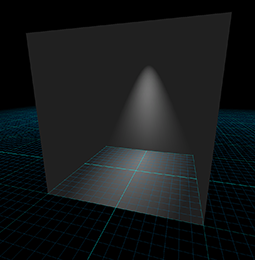

from 3D Graphics
This chapter discusses a number of mathematical issues that arise when creating 3D graphics on a computer. Of course, we cannot hope to cover the vast subject of computer graphics in any amount of detail in a single chapter. Entire books are written that merely survey the topic. This chapter is to graphics what this entire book is to interactive 3D applications: it presents an extremely brief and high level overview of the subject matter, focusing on topics for which mathematics plays a critical role. Just like the rest of this book, we try to pay special attention to those topics that, from our experience, are glossed over in other sources or are a source of confusion in beginners.
To be a bit more direct: this chapter alone is not enough to teach you how to get some pretty pictures on the screen. However, it should be used parallel with (or preceding!) some other course, book, or self-study on graphics, and we hope that it will help you breeze past a few traditional sticky points. Although we present some example snippets in High Level Shading Language (HLSL) at the end of this chapter, you will not find much else to help you figure out which DirectX or OpenGL function calls to make to achieve some desired effect. These issues are certainly of supreme practical importance, but alas, they are also in the category of knowledge that Robert Maynard Hutchins dubbed “rapidly aging facts,” and we have tried to avoid writing a book that requires an update every other year when ATI releases a new card or Microsoft a new version of DirectX. Luckily, up-to-date API references and examples abound on the Internet, which is a much more appropriate place to get that sort of thing. (API stands for application programming interface. In this chapter, API will mean the software that we use to communicate with the rendering subsystem.)
One final caveat is that since this is a book on math for video games, we will have a real-time bias. This is not to say that the book cannot be used if you are interested in learning how to write a raytracer; only that our expertise and focus is in real-time graphics.
This chapter proceeds roughly in order from ivory tower theory to down-and-dirty code snippets.
- Section 10.1 gives a very high-level (and high-brow) theoretical approach to graphics, culminating in the rendering equation.
-
We then lower our brows somewhat to focus attention on matters of more direct practical
application, while still maintaining our platform independence and attempt to be relevant ten
years from now.
- Section 10.2 discusses some basic mathematics related to viewing in 3D.
- Section 10.3 introduces some important coordinate spaces and transformations.
- Section 10.4 looks at how to represent the surfaces of the geometry in our scene using a polygon mesh.
- Section 10.5 shows how to control material properties (such as the “color” of the object) using texture maps.
-
The next sections are about lighting.
- Section 10.6 defines the ubiquitous Blinn-Phong lighting model.
- Section 10.7 discusses some common methods for representing light sources.
-
With a little nudge further away from timeless theory, the next sections discuss
two issues of particular contemporary interest.
- Section 10.8 is about skeletal animation.
- Section 10.9 tells how bump mapping works.
-
The last third of this chapter is the most in danger of becoming irrelevant in
coming years, because it is the most immediately practical.
- Section 10.10 gives an overview of a simple real-time graphics pipeline, and then descends that pipeline and talks about some mathematical issues along the way.
- Section 10.11 concludes the chapter squarely in the “rapidly aging facts” territory with several HLSL examples demonstrating some of the techniques covered earlier.
10.1How Graphics Works
We begin our discussion of graphics by telling you how things really work, or perhaps more accurately, how they really should work, if we had enough knowledge and processing power to make things work the right way. The beginner student is to be warned that much introductory material (especially tutorials on the Internet) and API documentation suffers from a great lack of perspective. You might get the impression from reading these sources that diffuse maps, Blinn-Phong shading, and ambient occlusion are “The way images in the real world work,” when in fact you are probably reading a description of how one particular lighting model was implemented in one particular language on one particular piece of hardware through one particular API. Ultimately, any down-to-the-details tutorial must choose a lighting model, language, platform, color representation, performance goals, etc.—as we will have to do later in this chapter. (This lack of perspective is usually purposeful and warranted.) However, we think it's important to know which are the fundamental and timeless principles, and which are arbitrary choices based on approximations and trade-offs, guided by technological limitations that might by applicable only to real-time rendering, or are likely to change in the near future. So before we get too far into the details of the particular type of rendering most useful for introductory real-time graphics, we want to take our stab at describing how rendering really works.
We also hasten to add that this discussion assumes that the goal is photorealism, simulating how things work in nature. In fact, this is often not the goal, and it certainly is never the only goal. Understanding how nature works is a very important starting place, but artistic and practical factors often dictate a different strategy than just simulating nature.
10.1.1The Two Major Approaches to Rendering
We begin with the end in mind. The end goal of rendering is a bitmap, or perhaps a sequence of bitmaps if we are producing an animation. You almost certainly already know that a bitmap is a rectangular array of colors, and each grid entry is known as pixel, which is short for “picture element.” At the time we are producing the image, this bitmap is also known as the frame buffer, and often there is additional post-processing or conversion that happens when we copy the frame buffer to the final bitmap output.
How do we determine the color of each pixel? That is the fundamental question of rendering. Like so many challenges in computer science, a great place to start is by investigating how nature works.
We see light. The image that we perceive is the result of light that bounces around the environment and finally enters the eye. This process is complicated, to say the least. Not only is the physics1 of the light bouncing around very complicated, but so are the physiology of the sensing equipment in our eyes2 and the interpreting mechanisms in our minds. Thus, ignoring a great number of details and variations (as any introductory book must do), the basic question that any rendering system must answer for each pixel is “What color of light is approaching the camera from the direction corresponding to this pixel?”
There are basically two cases to consider. Either we are looking directly at a light source and light traveled directly from the light source to our eye, or (more commonly) light departed from a light source in some other direction, bounced one or more times, and then entered our eye. We can decompose the key question asked previously into two tasks. This book calls these two tasks the rendering algorithm, although these two highly abstracted procedures obviously conceal a great deal of complexity about the actual algorithms used in practice to implement it.
The rendering algorithm- Visible surface determination. Find the surface that is closest to the eye, in the direction corresponding to the current pixel.
- Lighting. Determine what light is emitted and/or reflected off this surface in the direction of the eye.
At this point it appears that we have made some gross simplifications, and many of you no doubt are raising your metaphorical hands to ask “What about translucency?” “What about reflections?” “What about refraction?” “What about atmospheric effects?” Please hold all questions until the end of the presentation.
The first step in the rendering algorithm is known as visible surface determination. There are two common solutions to this problem. The first is known as raytracing. Rather than following light rays in the direction that they travel from the emissive surfaces, we trace the rays backward, so that we can deal only with the light rays that matter: the ones that enter our eye from the given direction. We send a ray out from the eye in the direction through the center of each pixel3 to see the first object in the scene this ray strikes. Then we compute the color that is being emitted or reflected from that surface back in the direction of the ray. A highly simplified summary of this algorithm is illustrated by Listing 10.1.
for (each x,y screen pixel) {
// Select a ray for this pixel
Ray ray = getRayForPixel(x,y);
// Intersect the ray against the geometry. This will
// not just return the point of intersection, but also
// a surface normal and some other information needed
// to shade the point, such as an object reference,
// material information, local S,T coordinates, etc.
// Don't take this pseudocode too literally.
Vector3 pos, normal;
Object *obj; Material *mtl;
if (rayIntersectScene(ray, pos, normal, obj, mtl)) {
// Shade the intersection point. (What light is
// emitted/reflected from this point towards the camera?)
Color c = shadePoint(ray, pos, normal, obj, mtl);
// Put it into the frame buffer
writeFrameBuffer(x,y, c);
} else {
// Ray missed the entire scene. Just use a generic
// background color at this pixel
writeFrameBuffer(x,y, backgroundColor);
}
}
The other major strategy for visible surface determination, the one used for real-time rendering at the time of this writing, is known as depth buffering. The basic plan is that at each pixel we store not only a color value, but also a depth value. This depth buffer value records the distance from the eye to the surface that is reflecting or emitting the light used to determine the color for that pixel. As illustrated in Listing 10.1, the “outer loop” of a raytracer is the screen-space pixels, but in real-time graphics, the “outer loop” is the geometric elements that make up the surface of the scene.
The different methods for describing surfaces are not important here. What is important is that we can project the surface onto screen-space and map them to screen-space pixels through a process known as rasterization. For each pixel of the surface, known as the source fragment, we compute the depth of the surface at that pixel and compare it to the existing value in the depth buffer, sometimes known as the destination fragment. If the source fragment we are currently rendering is farther away from the camera than the existing value in the buffer, then whatever we rendered before this is obscuring the surface we are now rendering (at least at this one pixel), and we move on to the next pixel. However, if our depth value is closer than the existing value in the depth buffer, then we know this is the closest surface to the eye (at least of those rendered so far) and so we update the depth buffer with this new, closer depth value. At this point we might also proceed to step 2 of the rendering algorithm (at least for this pixel) and update the frame buffer with the color of the light being emitted or reflected from the surface that point. This is known as forward rendering, and the basic idea is illustrated by Listing 10.2.
// Clear the frame and depth buffers
fillFrameBuffer(backgroundColor);
fillDepthBuffer(infinity);
// Outer loop iterates over all the primitives (usually triangles)
for (each geometric primitive) {
// Rasterize the primitive
for (each pixel x,y in the projection of the primitive) {
// Test the depth buffer, to see if a closer pixel has
// already been written.
float primDepth = getDepthOfPrimitiveAtPixel(x,y);
if (primDepth > readDepthBuffer(x,y)) {
// Pixel of this primitive is obscured, discard it
continue;
}
// Determine primitive color at this pixel.
Color c = getColorOfPrimitiveAtPixel(x,y);
// Update the color and depth buffers
writeFrameBuffer(x,y, c);
writeDepthBuffer(x,y, primDepth);
}
}
Opposed to forward rendering is deferred rendering, an old technique that is becoming popular again due to the current location of bottlenecks in the types of images we are producing and the hardware we are using to produce them. A deferred renderer uses, in addition to the frame buffer and the depth buffer, additional buffers, collectively known as the G-buffer (short for “geometry” buffer), which holds extra information about the surface closest to the eye at that location, such as the 3D location of the surface, the surface normal, and material properties needed for lighting calculations, such as the “color” of the object and how “shiny” it is at that particular location. (Later, we see how those intuitive terms in quotes are a bit too vague for rendering purposes.) Compared to a forward renderer, a deferred renderer follows our two-step rendering algorithm a bit more literally. First we “render” the scene into the G-buffer, essentially performing only visibility determination—fetching the material properties of the point that is “seen” by each pixel but not yet performing lighting calculations. The second pass actually performs the lighting calculations. Listing 10.3 explains deferred rendering in pseudocode.
// Clear the geometry and depth buffers
clearGeometryBuffer();
fillDepthBuffer(infinity);
// Rasterize all primitives into the G-buffer
for (each geometric primitive) {
for (each pixel x,y in the projection of the primitive) {
// Test the depth buffer, to see if a closer pixel has
// already been written.
float primDepth = getDepthOfPrimitiveAtPixel(x,y);
if (primDepth > readDepthBuffer(x,y)) {
// Pixel of this primitive is obscured, discard it
continue;
}
// Fetch information needed for shading in the next pass.
MaterialInfo mtlInfo;
Vector3 pos, normal;
getPrimitiveShadingInfo(mtlInfo, pos, normal);
// Save it off into the G-buffer and depth buffer
writeGeometryBuffer(x,y, mtlInfo, pos, normal);
writeDepthBuffer(x,y, primDepth);
}
}
// Now perform shading in a 2nd pass, in screen space
for (each x,y screen pixel) {
if (readDepthBuffer(x,y) == infinity) {
// No geometry here. Just write a background color
writeFrameBuffer(x,y, backgroundColor);
} else {
// Fetch shading info back from the geometry buffer
MaterialInfo mtlInfo;
Vector3 pos, normal;
readGeometryBuffer(x,y, mtlInfo, pos, normal);
// Shade the point
Color c = shadePoint(pos, normal, mtlInfo);
// Put it into the frame buffer
writeFrameBuffer(x,y, c);
}
}
Pseudocode for deferred rendering using the depth buffer
Before moving on, we must mention one important point about why deferred rendering is popular. When multiple light sources illuminate the same surface point, hardware limitations or performance factors may prevent us from computing the final color of a pixel in a single calculation, as was shown in the pseudocode listings for both forward and deferred rendering. Instead, we must using multiple passes, one pass for each light, and accumulate the reflected light from each light source into the frame buffer. In forward rendering, these extra passes involve rerendering the primitives. Under deferred rendering, however, extra passes are in image space, and thus depend on the 2D size of the light in screen space, not on the complexity of the scene! It is in this situation that deferred rendering really begins to have large performance advantages over forward rendering.
10.1.2Describing Surface Properties: The BRDF
Now let's talk about the second step in the rendering algorithm: lighting. Once we have located the surface closest to the eye, we must determine the amount of light emitted directly from that surface, or emitted from some other source and reflected off the surface in the direction of the eye. The light directly transmitted from a surface to the eye—for example, when looking directly at a light bulb or the sun—is the simplest case. These emissive surfaces are a small minority in most scenes; most surfaces do not emit their own light, but rather they only reflect light that was emitted from somewhere else. We will focus the bulk of our attention on the nonemissive surfaces.
Although we often speak informally about the “color” of an object, we know that the perceived color of an object is actually the light that is entering our eye, and thus can depend on many different factors. Important questions to ask are: What colors of light are incident on the surface, and from what directions? From which direction are we viewing the surface? How “shiny” is the object?4 So a description of a surface suitable for use in rendering doesn't answer the question “What color is this surface?” This question is sometimes meaningless—what color is a mirror, for example? Instead, the salient question is a bit more complicated, and it goes something like, “When light of a given color strikes the surface from a given incident direction, how much of that light is reflected in some other particular direction?” The answer to this question is given by the bidirectional reflectance distribution function, or BRDF for short. So rather than “What color is the object?” we ask, “What is the distribution of reflected light?”
Symbolically, we write the BRDF as the function
Although we are particularly interested in the incident directions that come from emissive surfaces and the outgoing directions that point towards our eye, in general, the entire distribution is relevant. First of all, lights, eyes, and surfaces can move around, so in the context of creating a surface description (for example, “red leather”), we don't know which directions will be important. But even in a particular scene with all the surfaces, lights, and eyes fixed, light can bounce around multiple times, so we need to measure light reflections for arbitrary pairs of directions.
Before moving on, it's highly instructive to see how the two intuitive material properties that
were earlier disparaged, color and shininess, can be expressed precisely in the framework of a
BRDF. Consider a green ball. A green object is green and not blue because it reflects incident
light that is green more strongly than incident light of any other color.6 For example, perhaps green
light is almost all reflected, with only a small fraction absorbed, while 95%of the blue and
red light is absorbed and only 5%of light at those wavelengths is reflected in various
directions. White light actually consists of all the different colors of light, so a green object
essentially filters out colors other than green. If a different object responded to green and red
light in the same manner as our green ball, but absorbed 50%of the blue light and reflected the
other 50%, we might perceive the object as teal. Or if most of the light at all wavelengths was
absorbed, except for a small amount of green light, then we would perceive it as a dark shade of
green. To summarize, a BRDF accounts for the difference in color between two objects through the
dependence on
Next, consider the difference between shiny red plastic and diffuse red construction paper. A
shiny surface reflects incident light much more strongly in one particular direction compared to
others, whereas a diffuse surface scatters light more evenly across all outgoing directions. A
perfect reflector, such as a mirror, would reflect all the light from one incoming direction in a
single outgoing direction, whereas a perfectly diffuse surface would reflect light equally in all
outgoing directions, regardless of the direction of incidence. In summary, a BRDF accounts for
the difference in “shininess” of two objects through its dependence on
More complicated phenomena can be expressed by generalizing the BRDF. Translucence and light
refraction can be easily incorporated by allowing the direction vectors to point back into the
surface. We might call this mathematical generalization a bidirectional surface scattering
distribution function (BSSDF). Sometimes light strikes an object, bounces around inside of it,
and then exits at a different point. This phenomenon is known as
subsurface scattering and
is an important aspect of the appearances of many common substances, such as skin and milk. This
requires splitting the single reflection point
By the way, there are certain criteria that a BRDF must satisfy in order to be physically plausible. First, it doesn't make sense for a negative amount of light to be reflected in any direction. Second, it's not possible for the total reflected light to be more than the light that was incident, although the surface may absorb some energy so the reflected light can be less than the incident light. This rule is usually called the normalization constraint. A final, less obvious principle obeyed by physical surfaces is Helmholtz reciprocity: if we pick two arbitrary directions, the same fraction of light should be reflected, no matter which is the incident direction and which is the outgoing direction. In other words,
Helmholtz reciprocityDue to Helmholtz reciprocity, some authors don't label the two directions in the BRDF as “in” and “out” because to be physically plausible the computation must be symmetric.
The BRDF contains the complete description of an object's appearance at a given point, since it describes how the surface will reflect light at that point. Clearly, a great deal of thought must be put into the design of this function. Numerous lighting models have been proposed over the last several decades, and what is surprising is that one of the earliest models, Blinn-Phong, is still in widespread use in real-time graphics today. Although it is not physically accurate (nor plausible: it violates the normalization constraint), we study it because it is a good educational stepping stone and an important bit of graphics history. Actually, describing Blinn-Phong as “history” is wishful thinking—perhaps the most important reason to study this model is that it still is in such widespread use! In fact, it's the best example of the phenomena we mentioned at the start of this chapter: particular methods being presented as if they are “the way graphics work.”
Different lighting models have different goals. Some are better at simulating rough surfaces, others at surfaces with multiple strata. Some focus on providing intuitive “dials” for artists to control, without concern for whether those dials have any physical significance at all. Others are based on taking real-world surfaces and measuring them with special cameras called goniophotometers, essentially sampling the BRDF and then using interpolation to reconstruct the function from the tabulated data. The notable Blinn-Phong model discussed in Section 10.6 is useful because it is simple, inexpensive, and well understood by artists. Consult the sources in the suggested reading for a survey of lighting models.
10.1.3A Very Brief Introduction to Colorimetry
and Radiometry
Graphics is all about measuring light, and you should be aware of some important subtleties, even though we won't have time to go into complete detail here. The first is how to measure the color of light, and the second is how to measure its brightness.
In your middle school science classes you might have learned that every color of light is some mixture of red, green, and blue (RGB) light. This is the popular conception of light, but it's not quite correct. Light can take on any single frequency in the visible band, or it might be a combination of any number of frequencies. Color is a phenomena of human perception and is not quite the same thing as frequency. Indeed different combinations of frequencies of light can be perceived as the same color—these are known as metamers. The infinite combinations of frequencies of light are sort of like all the different chords that can be played on a piano (and also tones between the keys). In this metaphor our color perception is unable to pick out all the different individual notes, but instead, any given chord sounds to us like some combination of middle C, F, and G. Three color channels is not a magic number as far as physics is concerned, it's peculiar to human vision. Most other mammals have only two different types of receptors (we would call them “color blind”), and fish, reptiles, and birds have four types of color receptors (they would call us color blind).
However, even very advanced rendering systems project the continuous spectrum of visible light onto some discrete basis, most commonly, the RGB basis. This is a ubiquitous simplification, but we still wanted to let you know that it is a simplification, as it doesn't account for certain phenomena. The RGB basis is not the only color space, nor is it necessarily the best one for many purposes, but it is a very convenient basis because it is the one used by most display devices. In turn, the reason that this basis is used by so many display devices is due to the similarity to our own visual system. Hall [11] does a good job of describing the shortcomings of the RGB system.
Since the visible portion of the electromagnetic spectrum is continuous, an expression such as
- To describe the spectral distribution of light requires a continuous function, not just three numbers. However, to describe the human perception of that light, three numbers are essentially sufficient.
- The RGB system is a convenient color space, but it's not the only one, and not even the best one for many practical purposes. In practice, we usually treat light as being a combination of red, green, and blue because we are making images for human consumption.
You should also be aware of the different ways that we can measure the intensity of light. If we take a viewpoint from physics, we consider light as energy in the form of electromagnetic radiation, and we use units of measurement from the field of radiometry. The most basic quantity is radiant energy, which in the SI system is measured in the standard unit of energy, the joule (J). Just like any other type of energy, we are often interested in the rate of energy flow per unit time, which is known as power. In the SI system power is measured using the watt (W), which is one joule per second (1 W = 1 J/s). Power in the form of electromagnetic radiation is called radiant power or radiant flux. The term “flux,” which comes from the Latin fluxus for “flow,” refers to some quantity flowing across some cross-sectional area. Thus, radiant flux measures the total amount of energy that is arriving, leaving, or flowing across some area per unit time.
Imagine that a certain amount of radiant flux is emitted from a
Several equivalent terms exist for radiosity. First, note that we can measure the flux density (or total flux, for that matter) across any cross-sectional area. We might be measuring the radiant power emitted from some surface with a finite area, or the surface through which the light flows might be an imaginary boundary that exists only mathematically (for example, the surface of some imaginary sphere that surrounds a light source). Although in all cases we are measuring flux density, and thus the term “radiosity” is perfectly valid, we might also use more specific terms, depending on whether the light being measured is coming or going. If the area is a surface and the light is arriving on the surface, then the term irradiance is used. If light is being emitted from a surface, the term radiant exitance or radiant emittance is used. In digital image synthesis, the word “radiosity” is most often used to refer to light that is leaving a surface, having been either reflected or emitted.
When we are talking about the brightness at a particular point, we cannot use plain old radiant power because the area of that point is infinitesimal (essentially zero). We can speak of the flux density at a single point, but to measure flux, we need a finite area over which to measure. For a surface of finite area, if we have a single number that characterizes the total for the entire surface area, it will be measured in flux, but to capture the fact that different locations within that area might be brighter than others, we use a function that varies over the surface that will measure the flux density.
Now we are ready to consider what is perhaps the most central quantity we need to measure in graphics: the intensity of a “ray” of light. We can see why the radiosity is not the unit for the job by an extension of the ideas from the previous paragraph. Imagine a surface point surrounded by an emissive dome and receiving a certain amount of irradiance coming from all directions in the hemisphere centered on the local surface normal. Now imagine a second surface point experiencing the same amount of irradiance, only all of the illumination is coming from a single direction, in a very thin beam. Intuitively, we can see that a ray along this beam is somehow “brighter” than any one ray that is illuminating the first surface point. The irradiance is somehow “denser.” It is denser per unit solid area.
The idea of a solid area is probably new to some readers, but we can easily understand the idea
by comparing it to angles in the plane. A “regular” angle is measured (in radians) based on
the length of its projection onto the unit circle. In the same way, a solid angle measures the
area as projected onto the unit sphere surrounding the point. The SI unit for solid angle
is the
steradian, abbreviated “sr.” The complete sphere has
By measuring the radiance per unit solid angle, we can express the intensity of light at a certain point as a function that varies based upon the direction of incidence. We are very close to having the unit of measurement that describes the intensity of a ray. There is just one slight catch, illustrated by Figure 10.1, which is a close-up of a very thin pencil of light rays striking a surface. On the top, the rays strike the surface perpendicularly, and on the bottom, light rays of the same strength strike a different surface at an angle. The key point is that the area of the top surface is smaller than the area of the bottom surface; therefore, the irradiance on the top surface is larger than the irradiance on the bottom surface, despite the fact that the two surfaces are being illuminated by the “same number” of identical light rays. This basic phenomenon, that the angle of the surface causes incident light rays to be spread out and thus contribute less irradiance, is known as Lambert's law. We have more to say about Lambert's law in Section 10.6.3, but for now, the key idea is that the contribution of a bundle of light to the irradiance at a surface depends on the angle of that surface.
Due to Lambert's law, the unit we use in graphics to measure the strength of a ray, radiance, is defined as the radiant flux per unit projected area, per unit solid angle. To measure a projected area, we take the actual surface area and project it onto the plane perpendicular to the ray. (In Figure 10.1, imagine taking the bottom surface and projecting it upwards onto the top surface). Essentially this counteracts Lambert's law.
Table 10.1 summarizes the most important radiometric terms.
| Quantity | Units | SI unit | Rough translation |
| Radiant energy | Energy |
|
Total illumination duringan interval of time |
| Radiant flux | Power | Brightness of a finite areafrom all directions | |
| Radiant flux density | Power per unit area | Brightness of a single pointfrom all directions | |
| Irradiance | Power per unit area | Radiant flux density ofincident light | |
| Radiant exitance | Power per unit area | Radiant flux density ofemitted light | |
| Radiosity | Power per unit area | Radiant flux density ofemitted or reflected light | |
| Radiance | Power per unit projected area, perunit solid angle | Brightness of a ray |
Whereas radiometry takes the perspective of physics by measuring the raw energy of the light, the field of photometry weighs that same light using the human eye. For each of the corresponding radiometric terms, there is a similar term from photometry (Table 10.2). The only real difference is a nonlinear conversion from raw energy to perceived brightness.
| Radiometric term | Photometric term | SI Photometric unit |
| Radiant energy | Luminous energy | talbot, or lumen second ( |
| Radiant flux | Luminous flux, luminous power | lumen ( |
| Irradiance | Illuminance | lux ( |
| Radiant exitance | Luminous emittance | lux ( |
| Radiance | Luminance |
Throughout the remainder of this chapter, we try to use the proper radiometric units when possible. However, the practical realities of graphics make using proper units confusing, for two particular reasons. It is common in graphics to need to take some integral over a “signal”—for example, the color of some surface. In practice we cannot do the integral analytically, and so we must integrate numerically, which boils down to taking a weighted average of many samples. Although mathematically we are taking a weighted average (which ordinarily would not cause the units to change), in fact what we are doing is integrating, and that means each sample is really being multiplied by some differential quantity, such as a differential area or differential solid angle, which causes the physical units to change. A second cause of confusion is that, although many signals have a finite nonzero domain in the real world, they are represented in a computer by signals that are nonzero at a single point. (Mathematically, we say that the signal is a multiple of a Direc delta; see Section 12.4.3.) For example, a real-world light source has a finite area, and we would be interested in the radiance of the light at a given point on the emissive surface, in a given direction. In practice, we imagine shrinking the area of this light down to zero while holding the radiant flux constant. The flux density becomes infinite in theory. Thus, for a real area light we would need a signal to describe the flux density, whereas for a point light, the flux density becomes infinite and we instead describe the brightness of the light by its total flux. We'll repeat this information when we talk about point lights.
- Vague words such as “intensity” and “brightness” are best avoided when the more specific radiometric terms can be used. The scale of our numbers is not that important and we don't need to use real world SI units, but it is helpful to understand what the different radiometric quantities measure to avoid mixing quantities together inappropriately.
- Use radiant flux to measure the total brightness of a finite area, in all directions.
- Use radiant flux density to measure the brightness at a single point, in all directions. Irradiance and radiant exitance refer to radiant flux density of light that is incident and emitted, respectively. Radiosity is the radiant flux density of light that is leaving a surface, whether the light was reflected or emitted.
- Due to Lambert's law, a given ray contributes more differential irradiance when it strikes a surface at a perpendicular angle compared to a glancing angle.
- Use radiance to measure the brightness of a ray. More specifically, radiance is the flux per unit projected angle, per solid angle. We use projected area so that the value for a given ray is a property of a ray alone and does not depend on the orientation of the surface used to measure the flux density.
- Practical realities thwart our best intentions of doing things “the right way” when it comes to using proper units. Numerical integration is a lot like taking a weighted average, which hides the change of units that really occurs. Point lights and other Dirac deltas add further confusion.
10.1.4The Rendering Equation
Now let's fit the BRDF into the rendering algorithm. In step 2 of our rendering algorithm
(Section 10.1), we're trying to determine the radiance leaving a particular
surface in the direction of our eye. The only way this can happen is for light to arrive from
some direction onto the surface and get reflected in our direction. With the BRDF, we now have a
way to measure this. Consider all the potential directions that light might be incident upon the
surface, which form a hemisphere centered on
As fundamental as Equation (10.1) may be, its development is relatively recent, having been published in SIGGRAPH in 1986 by Kajiya [13]. Furthermore, it was the result of, rather than the cause of, numerous strategies for producing realistic images. Graphics researchers pursued the creation of images through different techniques that seemed to make sense to them before having a framework to describe the problem they were trying to solve. And for many years after that, most of us in the video game industry were unaware that the problem we were trying to solve had finally been clearly defined. (Many still are.)
Now let's convert this equation into English and see what the heck it means. First of all,
notice that
The term
On the right-hand side, we have a sum. The first term in the sum
Now let's dig into that intimidating integral. (By the way, if you haven't had calculus and haven't read Chapter 11 yet, just replace the word “integral” with “sum,” and you won't miss any of the main point of this section.) We've actually already discussed how it works when we talked about the BRDF, but let's repeat it with different words. We might rewrite the integral as
Note that symbol
Now all that is left is to dissect the integrand. It's a product of three factors:
The first factor denotes the radiance incident from the direction of
In purely mathematical terms, the rendering equation is an integral equation: it states a
relationship between some unknown function
To render a scene realistically, we must solve the rendering equation, which requires us to know (in theory) not only the radiance arriving at the camera, but also the entire distribution of radiance in the scene in every direction at every point. Clearly, this is too much to ask for a finite, digital computer, since both the set of surface locations and the set of potential incident/exiting directions are infinite. The real art in creating software for digital image synthesis is to allocate the limited processor time and memory most efficiently, to make the best possible approximation.
The simple rendering pipeline we present in Section 10.10 accounts only for direct light. It doesn't account for indirect light that bounced off of one surface and arrived at another. In other words, it only does “one recursion level” in the rendering equation. A huge component of realistic images is accounting for the indirect light—solving the rendering equation more completely. The various methods for accomplishing this are known as global illumination techniques.
This concludes our high-level presentation of how graphics works. Although we admit we have not yet presented a single practical idea, we believe it's very important to understand what you are trying to approximate before you start to approximate it. Even though the compromises we are forced to make for the sake of real-time are quite severe, the available computing power is growing. A video game programmer whose only exposure to graphics has been OpenGL tutorials or demos made by video card manufacturers or books that focused exclusively on real-time rendering will have a much more difficult time understanding even the global illumination techniques of today, much less those of tomorrow.
10.2Viewing in 3D
Before we render a scene, we must pick a camera and a window. That is, we must decide where to render it from (the view position, orientation, and zoom) and where to render it to (the rectangle on the screen). The output window is the simpler of the two, and so we will discuss it first.
Section 10.2.1 describes how to specify the output window. Section 10.2.2 discusses the pixel aspect ratio. Section 10.2.3 introduces the view frustum. Section 10.2.4 describes field of view angles and zoom.

10.2.1Specifying the Output Window
We don't have to render our image to the entire screen. For example, in split-screen multiplayer games, each player is given a portion of the screen. The output window refers to the portion of the output device where our image will be rendered. This is shown in Figure 10.2.
The position of the window is specified by the coordinates of the upper left-hand pixel
With that said, it is important to realize that we do not necessarily have to be rendering to the screen at all. We could be rendering into a buffer to be saved into a .TGA file or as a frame in an .AVI, or we may be rendering into a texture as a subprocess of the “main” render, to produce a shadow map, or a reflection, or the image on a monitor in the virtual world. For these reasons, the term render target is often used to refer to the current destination of rendering output.
10.2.2Pixel Aspect Ratio
Regardless of whether we are rendering to the screen or an off-screen buffer, we must know the aspect ratio of the pixels, which is the ratio of a pixel's height to its width. This ratio is often 1:1—that is, we have “square” pixels—but this is not always the case! We give some examples below, but it is common for this assumption to go unquestioned and become the source of complicated kludges applied in the wrong place, to fix up stretched or squashed images.
The formula for computing the aspect ratio is
Computing the pixel aspect ratio
The notation
But, as mentioned already, we often deal with square pixels with an aspect ratio of 1:1. For
example, on a desktop monitor with a physical width:height ratio of 4:3, some common resolutions
resulting in square pixel ratios are
Notice that nowhere in these calculations is the size or location of the window used; the location and size of the rendering window has no bearing on the physical proportions of a pixel. However, the size of the window will become important when we discuss field of view in Section 10.2.4, and the position is important when we map from camera space to screen space Section 10.3.5.
At this point, some readers may be wondering how this discussion makes sense in the context of
rendering to a bitmap, where the word “physical” implied by the variable names
10.2.3The View Frustum
The view frustum is the volume of space that is potentially visible to the camera. It is shaped like a pyramid with the tip snipped off. An example of a view frustum is shown in Figure 10.3.

The view frustum is bounded by six planes, known as the clip planes. The first four of
the planes form the sides of the pyramid and are called the top, left, bottom, and right planes,
for obvious reasons. They correspond to the sides of the output window. The near and far clip
planes, which correspond to certain camera-space values of
The reason for the far clip plane is perhaps easier to understand. It prevents rendering of
objects beyond a certain distance. There are two practical reasons why a far clip plane is
needed. The first is relatively easy to understand: a far clip plane can limit the number of
objects that need to be rendered in an outdoor environment. The second reason is slightly more
complicated, but essentially it has to do with how the depth buffer values are assigned. As an
example, if the
depth buffer entries are 16-bit fixed point, then the largest depth value that can
be stored is 65,535. The far clip establishes what (floating point)
Notice that each of the clipping planes are planes, with emphasis on the fact that they extend infinitely. The view volume is the intersection of the six half-spaces defined by the clip planes.
10.2.4Field of View and Zoom
A camera has position and orientation, just like any other object in the world. However, it also has an additional property known as field of view. Another term you probably know is zoom. Intuitively, you already know what it means to “zoom in” and “zoom out.” When you zoom in, the object you are looking at appears bigger on screen, and when you zoom out, the apparent size of the object is smaller. Let's see if we can develop this intuition into a more precise definition.
The field of view (FOV) is the angle that is intercepted by the view frustum. We actually need two angles: a horizontal field of view, and a vertical field of view. Let's drop back to 2D briefly and consider just one of these angles. Figure 10.4 shows the view frustum from above, illustrating precisely the angle that the horizontal field of view measures. The labeling of the axes is illustrative of camera space, which is discussed in Section 10.3.

Zoom measures the ratio of the apparent size of the object relative to a
Zoom can be interpreted geometrically as shown in Figure 10.5. Using some basic trig, we can derive the conversion between zoom and field of view:
Converting between zoom and field of viewNotice the inverse relationship between zoom and field of view. As zoom gets larger, the field of view gets smaller, causing the view frustum to narrow. It might not seem intuitive at first, but when the view frustum gets more narrow, the perceived size of visible objects increases.
Field of view is a convenient measurement for humans to use, but as we discover in Section 10.3.4, zoom is the measurement that we need to feed into the graphics pipeline.
We need two different field of view angles (or zoom values), one horizontal and one vertical. We are certainly free to choose any two arbitrary values we fancy, but if we do not maintain a proper relationship between these values, then the rendered image will appear stretched. If you've ever watched a movie intended for the wide screen that was simply squashed anamorphically to fit on a regular TV, or watched content with a 4:3 aspect on a 16:9 TV in “full”8 mode, then you have seen this effect.
In order to maintain proper proportions, the zoom values must be inversely proportional to the physical dimensions of the output window:
The usual relationship between vertical and horizontal zoom
The variable
In this formula,
-
-
-
-
-
-
Many rendering packages allow you to specify only one field of view angle (or zoom value). When you do this, they automatically compute the other value for you, assuming you want uniform display proportions. For example, you may specify the horizontal field of view, and they compute the vertical field of view for you.
Now that we know how to describe zoom in a manner suitable for consumption by a computer, what do we do with these zoom values? They go into the clip matrix, which is described in Section 10.3.4.
10.2.5Orthographic Projection
The discussion so far has centered on perspective projection, which is the most commonly used type of projection, since that's how our eyes perceive the world. However, in many situations orthographic projection is also useful. We introduced orthographic projection in Section 5.3; to briefly review, in orthographic projection, the lines of projection (the lines that connect all the points in space that project onto the same screen coordinates) are parallel, rather than intersecting at a single point. There is no perspective foreshortening in orthographic projection; an object will appear the same size on the screen no matter how far away it is, and moving the camera forward or backward along the viewing direction has no apparent effect so long as the objects remain in front of the near clip plane.
Figure 10.6 shows a scene rendered from the same position and orientation, comparing perspective and orthographic projection. On the left, notice that with perspective projection, parallel lines do not remain parallel, and the closer grid squares are larger than the ones in the distance. Under orthographic projection, the grid squares are all the same size and the grid lines remain parallel.

|

|
| Perspective projection | Orthographic projection |
Orthographic views are very useful for “schematic” views and other situations where distances and angles need to be measured precisely. Every modeling tool will support such a view. In a video game, you might use an orthographic view to render a map or some other HUD element.
For an orthographic projection, it makes no sense to speak of the “field of view” as an angle,
since the view frustum is shaped like a box, not a pyramid. Rather than defining the
The zoom value has a different meaning in orthographic projection compared to perspective. It is related to the physical size of the frustum box:
Converting between zoom and frustum size in orthographic projection
As with perspective projections, there are two different zoom values, one for
10.3Coordinate Spaces
This section reviews several important coordinate spaces related to 3D viewing. Unfortunately, terminology is not consistent in the literature on the subject, even though the concepts are. Here, we discuss the coordinate spaces in the order they are encountered as geometry flows through the graphics pipeline.
10.3.1Model, World, and Camera Space
The geometry of an object is initially described in object space, which is a coordinate space local to the object being described (see Section 3.2.2). The information described usually consists of vertex positions and surface normals. Object space is also known as local space and, especially in the context of graphics, model space.
From model space, the vertices are transformed into world space (see Section 3.2.1). The transformation from modeling space to world space is often called the model transform. Typically, lighting for the scene is specified in world space, although, as we see in Section 10.11, it doesn't really matter what coordinate space is used to perform the lighting calculations provided that the geometry and the lights can be expressed in the same space.
From world space, vertices are transformed by the view transform into camera space (see Section 3.2.3), also known as eye space and view space (not to be confused with canonical view volume space, discussed later). Camera space is a 3D coordinate space in which the origin is at the center of projection, one is axis parallel to the direction the camera is facing (perpendicular to the projection plane), one axis is the intersection of the top and bottom clip planes, and the other axis is the intersection of the left and right clip planes. If we assume the perspective of the camera, then one axis will be “horizontal” and one will be “vertical.”
In a left-handed world, the most common convention is to point

10.3.2Clip Space and the Clip Matrix
From camera space, vertices are transformed once again into clip space, also known as the canonical view volume space. The matrix that transforms vertices from camera space into clip space is called the clip matrix, also known as the projection matrix.
Up until now, our vertex positions have been “pure” 3D vectors—that is, they only had three
coordinates, or if they have a fourth coordinate, then
-
Prepare for projection. We put the proper value into
-
Apply zoom and prepare for clipping. We scale
10.3.3The Clip Matrix: Preparing for Projection
Recall from Section 6.4.1 that a 4D homogeneous vector is mapped
to the corresponding physical 3D vector by dividing by
The first goal of the clip matrix is to get the correct value into
If this was the only purpose of the clip matrix, to place the correct value into
Multiplying a vector of the form
At this point, many readers might very reasonably ask two questions. The first question might be,
“Why is this so complicated? This seems like a lot of work to accomplish what basically amounts
to just dividing by
The second question a reader might have is, “What happened to
To understand why

The vertical line on the left side of each diagram represents the film (or, for modern cameras,
the sensing element), which lies in the infinite plane of projection. Importantly, notice that
the film is the same height in each diagram. As we increase
Now let's look at what happens inside a computer. The “film” inside a computer is the rectangular portion of the projection plane that intersects the view frustum.9 Notice that if we increase the focal distance, the size of the projected image increases, just like it did in a real camera. However, inside a computer, the film actually increases by this same proportion, rather than the view frustum changing in size. Because the projected image and the film increase by the same proportion, there is no change to the rendered image or the apparent size of objects within thisimage.
In summary, zoom is always accomplished by changing the shape of the view frustum, whether we're
talking about a real camera or inside a computer. In a real camera, changing the focal length
changes the shape of the view frustum because the film stays the same size. However, in a
computer, adjusting the focal distance
Some software allow the user to specify the field of view by giving a focal length measured in millimeters. These numbers are in reference to some standard film size, almost always 35 mm film.
What about orthographic projection? In this case, we do not want to divide by
The next section fills in the rest of the clip matrix. But for now, the key point is that a
perspective projection matrix will always have a right-hand column of
Notice that multiplying the entire matrix by a constant factor doesn't have
any effect on the projected values
10.3.4The Clip Matrix: Applying Zoom and
Preparing for Clipping
The second goal of the clip matrix is to scale the
So the points inside the view volume satisfy
Any geometry that does not satisfy these equalities must be clipped to the view frustum. Clipping is discussed in Section 10.10.4.
To stretch things to put the top, left, right, and bottom clip planes in place, we scale the
Let
This clip matrix assumes a coordinate system with
Under these DirectX-style conventions, the points inside the view frustum satisfy the inequality
We can easily tell that the two matrices in
Equations (10.6) and
(10.7) are perspective projection
matrices because the right-hand column is
What about orthographic projection? The first and second columns of the projection matrix don't
change, and we know the fourth column will become
Alternatively, if we are using a DirectX-style range for the clip space
In this book, we prefer a left-handed convention and row vectors on the left, and all the
projection matrices so far assume those conventions. However, both of these choices differ from
the OpenGL convention, and we know that many readers may be working in environments that are
similar to OpenGL. Since this can be very confusing, let's repeat these matrices, but with the
right-handed, column-vector OpenGL conventions. We'll only discuss the
It's instructive to consider how to convert these matrices from one set of conventions to the
other. Because OpenGL uses column vectors, the first thing we need to do is transpose our
matrix. Second, the right-handed conventions have
The above procedure results in the following perspective projection matrix
Clip matrix for perspective projection assuming OpenGL conventionsand the orthographic projection matrix is
Clip matrix for orthographic projection assuming OpenGL conventions
So, for OpenGL conventions, you can tell whether a projection matrix is perspective or
orthographic based on the bottom row. It will be
Now that we know a bit about clip space, we can understand the need for the near clip plane. Obviously, there is a singularity precisely at the origin, where a perspective projection is not defined. (This corresponds to a perspective division by zero.) In practice, this singularity would be extremely rare, and however we wanted to handle it—say, by arbitrarily projecting the point to the center of the screen—would be OK, since putting the camera directly in a polygon isn't often needed in practice.
But projecting polygons onto pixels isn't the only issue. Allowing for arbitrarily small (but
positive) values of
10.3.5Screen Space
Once we have clipped the geometry to the view frustum, it is projected into screen space, which corresponds to actual pixels in the frame buffer. Remember that we are rendering into an output window that does not necessarily occupy the entire display device. However, we usually want our screen-space coordinates to be specified using coordinates that are absolute to the rendering device (Figure 10.9).
Screen space is a 2D space, of course. Thus, we must project the points from clip space to
screen space to generate the correct 2D coordinates. The first thing that happens is the
standard homogeneous division by
A quick comment is warranted about the negation of the
Speaking of
An alternative strategy, known as
The
On modern graphics APIs at the time of this writing, the conversion of vertex coordinates from clip space to screen space is done for you. Your vertex shader outputs coordinates in clip space. The API clips the triangles to the view frustum and then projects the coordinates to screen space. But that doesn't mean that you will never use the equations in this section in your code. Quite often, we need to perform these calculations in software for visibility testing, level-of-detail selection, and so forth.
10.3.6Summary of Coordinate Spaces
Figure 10.10 summarizes the coordinate spaces and matrices discussed in this section, showing the data flow from object space to screen space.

The coordinate spaces we've mentioned are the most important and common ones, but other coordinate spaces are used in computer graphics. For example, a projected light might have its own space, which is essentially the same as camera space, only it is from the perspective that the light “looks” onto the scene. This space is important when the light projects an image (sometimes called a gobo) and also for shadow mapping to determine whether a light can “see” a given point.
Another space that has become very important is tangent space, which is a local space on the surface of an object. One basis vector is the surface normal and the other two basis vectors are locally tangent to the surface, essentially establishing a 2D coordinate space that is “flat” on the surface at that spot. There are many different ways we could determine these basis vectors, but by far the most common reason to establish such a coordinate space is for bump mapping and related techniques. A more complete discussion of tangent space will need to wait until after we discuss texture mapping in Section 10.5, so we'll come back to this subject in Section 10.9.1. Tangent space is also sometimes called surface-localspace.
10.4Polygon Meshes
To render a scene, we need a mathematical description of the geometry in that scene. Several different methods are available to us. This section focuses on the one most important for real-time rendering: the triangle mesh. But first, let's mention a few alternatives to get some context. Constructive solid geometry (CSG) is a system for describing an object's shape using Boolean operators (union, intersection, subtraction) on primitives. Within video games, CSG can be especially useful for rapid prototyping tools, with the Unreal engine being a notable example. Another technique that works by modeling volumes rather than their surfaces is metaballs, sometimes used to model organic shapes and fluids, as was discussed in Section 9.1. CSG, metaballs, and other volumetric descriptions are very useful in particular realms, but for rendering (especially real-time rendering) we are interested in a description of the surface of the object, and seldom need to determine whether a given point is inside or outside this surface. Indeed, the surface need not be closed or even define a coherent volume.
The most common surface description is the polygon mesh, of which you are probably already aware. In certain circumstances, it's useful to allow the polygons that form the surface of the object to have an arbitrary number of vertices; this is often the case in importing and editing tools. For real-time rendering, however, modern hardware is optimized for triangle meshes, which are polygon meshes in which every polygon is a triangle. Any given polygon mesh can be converted into an equivalent triangle mesh by decomposing each polygon into triangles individually, as was discussed briefly in Section 9.7.3. Please note that many important concepts introduced in the context of a single triangle or polygon were covered in Section 9.6 and Section 9.7, respectively. Here, our focus is on how more than one triangle can be connected in a mesh.
One very straightforward way to store a triangle mesh would be to use an array of triangles, as shown in Listing 10.4.
struct Triangle {
Vector3 vertPos[3]; // vertex positions
};
struct TriangleMesh {
int triCount; // number of triangles
Triangle *triList; // array of triangles
};
For some applications this trivial representation might be adequate. However, the term “mesh” implies a degree of connectivity between adjacent triangles, and this connectivity is not expressed in our trivial representation. There are three basic types of information in a triangle mesh:
- Vertices. Each triangle has exactly three vertices. Each vertex may be shared by multiple triangles. The valence of a vertex refers to how many faces are connected to the vertex.
- Edges. An edge connects two vertices. Each triangle has three edges. In many cases, each edge is shared by exactly two faces, but there are certainly exceptions. If the object is not closed, an open edge with only one neighboring face can exist.
- Faces. These are the surfaces of the triangles. We can store a face as either a list of three vertices, or a list of three edges.
A variety of methods exist to represent this information efficiently, depending on the operations to be performed most often on the mesh. Here we will focus on a standard storage format known as an indexed triangle mesh.
10.4.1Indexed Triangle Mesh
An indexed triangle mesh consists of two lists: a list of vertices, and a list of triangles.
- Each vertex contains a position in 3D. We may also store other information at the vertex level, such as texture-mapping coordinates, surface normals, or lighting values.
- A triangle is represented by three integers that index into the vertex list. Usually, the order in which these vertices are listed is significant, since we may consider faces to have “front” and “back” sides. We adopt the left-handed convention that the vertices are listed in clockwise order when viewed from the front side. Other information may also be stored at the triangle level, such as a precomputed normal of the plane containing the triangle, surface properties (such as a texture map), and so forth.
Listing 10.5 shows a highly simplified example of how an indexed triangle mesh might be stored in C.
// struct Vertex is the information we store at the vertex level
struct Vertex {
// 3D position of the vertex
Vector3 pos;
// Other information could include
// texture mapping coordinates, a
// surface normal, lighting values, etc.
};
// struct Triangle is the information we store at the triangle level
struct Triangle {
// Indices into the vertex list. In practice, 16-bit indices are
// almost always used rather than 32-bit, to save memory and bandwidth.
int vertexIndex[3];
// Other information could include
// a normal, material information, etc
};
// struct TriangleMesh stores an indexed triangle mesh
struct TriangleMesh {
// The vertices
int vertexCount;
Vertex *vertexList;
// The triangles
int triangleCount;
Triangle *triangleList;
};
Figure 10.11 shows how a cube and a pyramid might be represented as a polygon mesh or a triangle mesh. Note that both objects are part of a single mesh with 13 vertices. The lighter, thicker wires show the outlines of polygons, and the thinner, dark green wires show one way to add edges to triangulate the polygon mesh.

Assuming the origin is on the “ground” directly between the two objects, the vertex coordinates might be as shown in Table 10.3.
| 0 | 4 | 8 | 12 | ||||
| 1 | 5 | 9 | |||||
| 2 | 6 | 10 | |||||
| 3 | 7 | 11 |
Table 10.4 shows the vertex indices that would form faces of this mesh, either as a polygon mesh or as a triangle mesh. Remember that the order of the vertices is significant; they are listed in clockwise order when viewed from the outside. You should study these figures until you are sure you understand them.
| Vertex indices | Vertex indices | |
| Description | (Polygon mesh) | (Triangle mesh) |
| Cube top | ||
| Cube front | ||
| Cube right | ||
| Cube left | ||
| Cube back | ||
| Cube bottom | ||
| Pyramid front | ||
| Pyramid left | ||
| Pyramid right | ||
| Pyramid back | ||
| Pyramid bottom |
The vertices must be listed in clockwise order around a face, but it doesn't matter which one is
considered the “first” vertex; they can be cycled without changing the logical structure of the
mesh. For example, the quad forming the cube top could equivalently have been given as
As indicated by the comments in Listing 10.5, additional data are almost always stored per vertex, such as texture coordinates, surface normals, basis vectors, colors, skinning data, and so on. Each of these is discussed in later sections in the context of the techniques that make use of the data. Additional data can also be stored at the triangle level, such as an index that tells which material to use for that face, or the plane equation (part of which is the surface normal—see Section 9.5) for the face. This is highly useful for editing purposes or in other tools that perform mesh manipulations in software. For real-time rendering, however, we seldom store data at the triangle level beyond the three vertex indices. In fact, the most common method is to not have a struct Triangle at all, and to represent the entire list of triangles simply as an array (e.g. unsigned short triList[] ), where the length of the array is the number of triangles times 3. Triangles with identical properties are grouped into batches so that an entire batch can be fed to the GPU in this optimal format. After we review many of the concepts that give rise to the need to store additional data per vertex, Section 10.10.2 looks at several more specific examples of how we might feed that data to the graphics API. By the way, as a general rule, things are a lot easier if you do not try to use the same mesh class for both rendering and editing. The requirements are very different, and a bulkier data structure with more flexibility is best for use in tools, importers, and the like.
Note that in an indexed triangle mesh, the edges are not stored explicitly, but rather the adjacency information contained in an indexed triangle list is stored implicitly: to locate shared edges between triangles, we must search the triangle list. Our original trivial “array of triangles” format in Listing 10.4 did not have any logical connectivity information (although we could have attempted to detect whether the vertices on an edge were identical by comparing the vertex positions or other properties). What's surprising is that the “extra” connectivity information contained in the indexed representation actually results in a reduction of memory usage in most cases, compared to the flat method. The reason for this is that the information stored at the vertex level, which is duplicated in the trivial flat format, is relatively large compared to a single integer index. (At a minimum, we must store a 3D vector position.) In meshes that arise in practice, a typical vertex has a valence of around 3–6, which means that the flat format duplicates quite a lot of data.
The simple indexed triangle mesh scheme is appropriate for many applications, including the very important one of rendering. However, some operations on triangle meshes require a more advanced data structure in order to be implemented more efficiently. The basic problem is that the adjacency between triangles is not expressed explicitly and must be extracted by searching the triangle list. Other representation techniques exist that make this information available in constant time. One idea is to maintain an edge list explicitly. Each edge is defined by listing the two vertices on the ends. We also maintain a list of triangles that share the edge. Then the triangles can be viewed as a list of three edges rather than a list of three vertices, so they are stored as three indices into the edge list rather than the vertex list. An extension of this idea is known as the winged-edge model [7], which also stores, for each vertex, a reference to one edge that uses the vertex. The edges and triangles may be traversed intelligently to quickly locate all edges and triangles that use the vertex.
10.4.2Surface Normals
Surface normals are used for several different purposes in graphics; for example, to compute proper lighting (Section 10.6), and for backface culling (Section 10.10.5). In general, a surface normal is a unit10 vector that is perpendicular to a surface. We might be interested in the normal of a given face, in which case the surface of interest is the plane that contains the face. The surface normals for polygons can be computed easily by using the techniques from Section 9.5.
Vertex-level normals are a bit trickier. First, it should be noted that, strictly speaking, there is not a true surface normal at a vertex (or an edge for that matter), since these locations mark discontinuities in the surface of the polygon mesh. Rather, for rendering purposes, we typically interpret a polygon mesh as an approximation to some smooth surface. So we don't want a normal to the piecewise linear surface defined by the polygon mesh; rather, we want (an approximation of) the surface normal of the smooth surface.
The primary purpose of vertex normals is lighting. Practically every lighting model takes a surface normal at the spot being lit as an input. Indeed, the surface normal is part of the rendering equation itself (in the Lambert factor), so it is always an input, even if the BRDF does not depend on it. We have normals available only at the vertices, but yet we need to compute lighting values over the entire surface. What to do? If hardware resources permit (as they usually do nowadays), then we can approximate the normal of the continuous surface corresponding to any point on a given face by interpolating vertex normals and renormalizing the result. This technique is illustrated in Figure 10.12, which shows a cross section of a cylinder (black circle) that is being approximated by a hexagonal prism (blue outline). Black normals at the vertices are the true surface normals, whereas the interior normals are being approximated through interpolation. (The actual normals used would be the result of stretching these out to unit length.)
Once we have a normal at a given point, we can perform the full lighting equation per pixel. This is known as per-pixel shading.11 An alternative strategy to per-pixel shading, known as Gouraud12 shading [9], is to perform lighting calculations only at the vertex level, and then interpolate the results themselves, rather than the normal, across the face. This requires less computation, and is still done on some systems, such as the Nintendo Wii.
Figure 10.13 shows per-pixel lighting of cylinders with a different number of sides. Although the illusion breaks down on the ends of the cylinder, where the silhouette edge gives away the low-poly nature of the geometry, this method of approximating a smooth surface can indeed make even a very low-resolution mesh look “smooth.” Cover up the ends of the cylinder, and even the 5-sided cylinder is remarkably convincing.
Now that we understand how normals are interpolated in order to approximately reconstruct a curved surface, let's talk about how to obtain vertex normals. This information may not be readily available, depending on how the triangle mesh was generated. If the mesh is generated procedurally, for example, from a parametric curved surface, then the vertex normals can be supplied at that time. Or you may simply be handed the vertex normals from the modeling package as part of the mesh. However, sometimes the surface normals are not provided, and we must approximate them by interpreting the only information available to us: the vertex positions and the triangles. One trick that works is to average the normals of the adjacent triangles, and then renormalize the result. This classic technique is demonstrated in Listing 10.6.
struct Vertex {
Vector3 pos;
Vector3 normal;
};
struct Triangle {
int vertexIndex[3];
Vector3 normal;
};
struct TriangleMesh {
int vertexCount;
Vertex *vertexList;
int triangleCount;
Triangle *triangleList;
void computeVertexNormals() {
// First clear out the vertex normals
for (int i = 0 ; i < vertexCount ; ++i) {
vertexList[i].normal.zero();
}
// Now add in the face normals into the
// normals of the adjacent vertices
for (int i = 0 ; i < triangleCount ; ++i) {
// Get shortcut
Triangle &tri = triangleList[i];
// Compute triangle normal.
Vector3 v0 = vertexList[tri.vertexIndex[0]].pos;
Vector3 v1 = vertexList[tri.vertexIndex[1]].pos;
Vector3 v2 = vertexList[tri.vertexIndex[2]].pos;
tri.normal = cross(v1-v0, v2-v1);
tri.normal.normalize();
// Sum it into the adjacent vertices
for (int j = 0 ; j < 3 ; ++j) {
vertexList[tri.vertexIndex[j]].normal += tri.normal;
}
}
// Finally, average and normalize the results.
// Note that this can blow up if a vertex is isolated
// (not used by any triangles), and in some other cases.
for (int i = 0 ; i < vertexCount ; ++i) {
vertexList[i].normal.normalize();
}
}
};
Averaging face normals to compute vertex normals is a tried-and-true technique that works well in most cases. However, there are a few things to watch out for. The first is that sometimes the mesh is supposed to have a discontinuity, and if we're not careful, this discontinuity will get “smoothed out.” Take the very simple example of a box. There should be a sharp lighting discontinuity at its edges. However, if we use vertex normals computed from the average of the surface normals, then there is no lighting discontinuity, as shown in Figure 10.14.

|
|
||||||||||||||||||||||||||||||||||||||||||||||
The basic problem is that the surface discontinuity at the box edges cannot be properly represented because there is only one normal stored per vertex. The solution to this problem is to “detach” the faces; in other words, duplicate the vertices along the edge where there is a true geometric discontinuity, creating a topological discontinuity to prevent the vertex normals from being averaged. After doing so, the faces are no longer logically connected, but this seam in the topology of the mesh doesn't cause a problem for many important tasks, such as rendering and raytracing. Table 10.5 shows a smoothed box mesh with eight vertices. Compare that mesh to the one in Table 10.6, in which the faces have been detached, resulting in 24 vertices.
|
|
||||||||||||||||||||||||||||||||||||||||||||||||||||||||||||||||||||||||||||||||||||||||||||||
An extreme version of this situation occurs when two faces are placed back-to-back. Such infinitely thin double-sided geometry can arise with foliage, cloth, billboards, and the like. In this case, since the normals are exactly opposite, averaging them produces the zero vector, which cannot be normalized. The simplest solution is to detach the faces so that the vertex normals will not average together. Or if the front and back sides are mirror images, the two “single-sided” polygons can be replaced by one “double-sided” one. This requires special treatment during rendering to disable backface culling (Section 10.10.5) and intelligently dealing with the normal in the lighting equation.
A more subtle problem is that the averaging is biased towards large numbers of triangles with the same normal. For example, consider the vertex at index 1 in Figure 10.11. This vertex is adjacent to two triangles on the top of the cube, but only one triangle on the right side and one triangle on the back side. The vertex normal computed by averaging the triangle normals is biased because the top face normal essentially gets twice as many “votes” as each of the side face normals. But this topology is the result of an arbitrary decision as to where to draw the edges to triangulate the faces of the cube. For example, if we were to triangulate the top face by drawing an edge between vertices 0 and 2 (this is known as “turning” the edge), all of the normals on the top face wouldchange.
Techniques exist to deal with this problem, such as weighing the contribution from each adjacent face based on the interior angle adjacent to the vertex, but it's often ignored in practice. Most of the really terrible examples are contrived ones like this, where the faces should be detached anyway. Furthermore, the normals are an approximation to begin with, and having a slightly perturbed normal is often difficult to tell visually.
Although some modeling packages can deliver vertex normals for you, fewer provide the basis vectors needed for bump mapping. As we see in Section 10.9, techniques used to synthesize vertex basis vectors are similar to those described here.
Before we go on, there is one very important fact about surface normals that we must mention. In certain circumstances, they cannot be transformed by the same matrix that is used to transform positions. (This is an entirely separate issue from the fact that normals should not be translated like positions.) The reason for this is that normals are covariant vectors. “Regular” vectors, such as position and velocity, are said to be contravariant: if we scale the coordinate space used to describe the vector, the coordinates will respond in the opposite direction. If we use a coordinate space with a larger scale (for example, using meters instead of feet) the coordinates of a contravariant vector respond to the contrary, by becoming smaller. Notice that this is all about scale; translation and rotation are not part of the discussion. Normals and other types of gradients, known as dual vectors, do not behave like this.
Imagine that we stretch a 2D object, such as a circle, horizontally, as shown in Figure 10.15. Notice that the normals (shown in light blue in the right figure) begin to turn to point more vertically—the horizontal coordinates of the normals are decreasing in absolute value while the horizontal coordinates of the positions are increasing. A stretching of the object (object getting bigger while coordinate space stays the same) has the same effect as scaling down the coordinate space while holding the object at the same size. The coordinates of the normal change in the same direction as the scale of the coordinate space, which is why they are called covariant vectors.

To properly transform surface normals, we must use the inverse transpose of the matrix
used to transform positions; that is, the result of transposing and inverting the matrix. This is
sometimes denoted
10.5Texture Mapping
There is much more to the appearance of an object than its shape. Different objects are different colors and have different patterns on their surface. One simple yet powerful way to capture these qualities is through texture mapping. A texture map is a bitmap image that is “pasted” to the surface of an object. Rather than controlling the color of an object per triangle or per vertex, with texture mapping we can control the color at a much finer level—per texel. (A texel is a single pixel in a texture map. This is a handy word to know, since in graphics contexts, there are lots of different bitmaps being accessed, and it's nice to have a short way to differentiate between a pixel in the frame buffer and a pixel in a texture.)
So a texture map is just a regular bitmap that is applied onto the surface of a model. Exactly
how does this work? Actually, there are many different ways to apply a texture map
onto a mesh.
Planar mapping projects the texture orthographically onto the mesh. Spherical,
cylindrical, and cubic mapping are various methods of “wrapping” the texture
around the object. The details of each of these techniques are not important to us at the moment,
since modeling packages such as 3DS Max deal with these user interface issues. The key
idea is that, at each point on the surface of the mesh, we can obtain texture-mapping
coordinates, which define the 2D location in the texture map that corresponds to this 3D
location. Traditionally, these coordinates are assigned the variables
Although bitmaps come in different sizes, UV coordinates are normalized such that the mapping
space ranges from 0 to 1 over the entire width (

In principle, it doesn't matter how we determine the UV coordinates for a given point on the surface. However, even when UV coordinates are calculated dynamically, rather than edited by an artist, we typically compute or assign UV coordinates only at the vertex level, and the UV coordinates at an arbitrary interior position on a face are obtained through interpolation. If you imagine the texture map as a stretchy cloth, then when we assign texture-mapping coordinates to a vertex, it's like sticking a pin through the cloth at those UV coordinates, and then pinning the cloth onto the surface at that vertex. There is one pin per vertex, so the whole surface is covered.
Let's look at some examples. Figure 10.17 shows a single texture-mapped quad, with different UV values assigned to the vertices. The bottom of each diagram shows the UV space of the texture. You should study these examples until you are sure you understand them.

|

|
|

|

|
UV coordinates outside of the range
| Repeat | Clamp |

|

|
There are other options supported on some hardware, such as mirror, which is similar to repeat
except that every other tile is mirrored. (This can be beneficial because it guarantees that no
“seam” will exist between adjacent tiles.) On most hardware, the addressing mode can be set
for the
Figure 10.19 shows one last instructive example: the same mesh is texture mapped two different ways.

|
|

|

|
10.6The Standard Local Lighting Model
In the rendering equation, the BRDF describes the scattering distribution for light of a given frequency and direction of incidence. The differences in distributions between different surfaces is precisely what causes those surfaces (or even different surface points on the same object) to look different from one another. Most BRDFs are expressed in a computer by some sort of formula, where certain numbers in the formula are adjusted to match the desired material properties. The formula itself is often called a lighting model, and the particular values going into the formula come from the material assigned to the surface. It is common for a game engine to use only a handful of lighting models, even though the materials in the scene may be quite diverse and there may be thousands of different BRDFs. Indeed, just a few years ago, almost all real-time rendering was done with a single lighting model. In fact, the practice is not uncommon today.
This lighting model was so ubiquitous that it was hardwired into the very rendering APIs of OpenGL and DirectX. Although these older parts of the API have effectively become legacy features on hardware with programmable shaders, the standard model is still commonly used in the more general framework of shaders and generic constants and interpolants. The great diversity and flexibility available is usually used to determine the best way to feed the parameters into the model (for example, by doing multiple lights at once, or doing all the lighting at the end with deferred shading), rather than using different models. But even ignoring programmable shaders, at the time of this writing, the most popular video game console is the Nintendo Wii,13 which has hardwired support for this standard model.
The venerable standard lighting model is the subject of this section. Since its development precedes the framework of the BRDF and the rendering equation by at least a decade, we first present this model in the simplified context that surrounded its creation. This notation and perspective are still predominant in the literature today, which is why we think we should present the idea in its own terms. Along the way, we show how one component of the model (the diffuse component) is modeled as a BRDF. The standard model is important in the present, but you must understand the rendering equation if you want to be prepared for the future.
10.6.1The Standard Lighting Equation: Overview
Bui Tuong Phong [21] introduced the basic concepts behind the standard lighting
model in 1975. Back then, the focus was on a fast way to model direct reflection. While
certainly researchers understood the importance of indirect light, it was a luxury that could not
yet be afforded. Thus while the rendering equation (which, as we noted previously, came into
focus a decade or so after the proposal of the standard model) is an equation for the radiance
outgoing from a point in any particular direction, the only outgoing direction that mattered in
those days were the directions that pointed to the eye. Similarly, while the rendering equation
considers incident light from the entire hemisphere surrounding the surface normal, if we ignore
indirect light, then we need not cast about in all incident directions. We need to consider only
those directions that aim at a light source. We examine some different ways that light sources
are modeled in real-time graphics in more detail in Section 10.7, but for now an
important point is that the light sources are not emissive surfaces in the scene, as they
are in the rendering equation and in the real world. Instead, lights are special entities without
any corresponding geometry, and are simulated as if the light were emitting from a single point.
Thus, rather than including a solid angle of directions corresponding to the projection of the
emissive surface of each light source onto the hemisphere surrounding
Now for the model. The basic idea is to classify light coming into the eye into four distinct categories, each of which has a unique method for calculating its contribution. The four categories are
-
The emissive contribution, denoted
-
The specular contribution, denoted
-
The diffuse contribution, denoted
-
The ambient contribution, denoted
The letter
The emissive term is the same as in the rendering equation, so there's not much more detail to
say about it. In practice, the emissive contribution is simply a constant color at any given
surface point
10.6.2The Specular Component
The specular component of the standard lighting model accounts for the light that is reflected (mostly) in a “perfect mirror bounce” off the surface. The specular component is what gives surfaces a “shiny” appearance. Rougher surfaces tend to scatter the light in a much broader pattern of directions, which is modeled by the diffuse component described in Section 10.6.3.
Now let's see how the standard model calculates the specular contribution. The important vectors are labeled in Figure 10.20.
-
-
-
-
-

For convenience, we assume that all of these vectors are unit vectors. Our convention in this book is to denote unit vectors with hats, but we'll drop the hats to avoid decorating the equations excessively. Many texts on the subject use these standard variable names and, especially in the video game community, they are effectively part of the vernacular. It is not uncommon for job interview questions to be posed in such a way that assumes the applicant is familiar with this framework.
One note about the
Of the four vectors, the first three are inherent degrees of freedom of the problem, and the
reflection vector

As you can see, the reflection vector can be computed by
Computing the reflection vector is a popular job interview question
There are many interviewers for whom this equation is a favorite topic, which is why we have
displayed it on a line by itself, despite the fact that it would have fit perfectly fine inline
in the paragraph. A reader seeking a job in the video game industry is advised to fully digest
Figure 10.21, to be able to produce Equation (10.10)
under pressure. Notice that if we assume
Now that we know
In this formula and elsewhere in this book, the symbol
First, let's consider
Like all of the material properties that are input to the lighting equation, the value for
Another value in Equation (10.11) related to “shininess” is the material's
specular color, denoted
The light specular color, denoted

Figure 10.22 shows how different values of
Blinn [4] popularized a slight modification to the Phong model that produces
very similar visual results, but at the time was a significant optimization. In many cases, it is
still faster to compute today, but beware that vector operations (which are reduced with this
model) are not always the performance bottleneck. The basic idea is this: if the distance to the
viewer is large relative to the size of an object, then
Then, rather than using the angle between
The formula for the Blinn model is quite similar to the original Phong model. Only the dot product portion is changed.
The Blinn model can be faster to implement in hardware than the Phong model, if the viewer and
light source are far enough away from the object to be considered a constant, since then
One detail we have omitted is that in either model,
10.6.3The Diffuse Component
The next component in the standard lighting model is the diffuse component. Like the specular component, the diffuse component also models light that traveled directly from the light source to the shading point. However, whereas specular light accounts for light that reflects preferentially in a particular direction, diffuse light models light that is reflected randomly in all directions due to the rough nature of the surface material. Figure 10.24 compares how rays of light reflect on a perfectly reflective surface and on a rough surface.

To compute specular lighting, we needed to know the location of the viewer, to see how close the
eye is to the direction of the perfect mirror bounce. For diffuse lighting, in contrast, the
location of the viewer is not relevant, since the reflections are scattered randomly, and
no matter where we position the camera, it is equally likely that a ray will be sent our way.
However, the direction if incidence
Notice that, in both cases, the perpendicular distance between the rays is the same. (Due to an optical illusion in the diagram, the rays on the right may appear to be farther apart, but they are not.) So, the perpendicular distance between the rays is the same, but notice that on the right side of Figure 10.25, they strike the object at points that are farther apart. The surface on the left receives nine light rays, and the surface on the right receives only six, even though the “area” of both surfaces is the same. Thus the number of photons per unit area15 is higher on the left, and it will appear brighter, all other factors being equal. This same phenomenon is responsible for the fact that the climate near the equator is warmer than near the poles. Since Earth is round, the light from the sun strikes Earth at a more perpendicular angle near the equator.
Diffuse lighting obeys Lambert's law: the intensity of the reflected light is proportional to the cosine of the angle between the surface normal and the rays of light. We will compute this cosine with the dot product.
As before,
Just as with specular lighting, we must prevent the dot product from going negative by clamping it to zero. This prevents objects from being lit from behind.
It's very instructive to see how diffuse surfaces are implemented in the framework of the rendering equation.
Note the similarity of Equation (10.12) with the contents of the integral from the rendering equation,
The first factor is the incident light color. The material color
10.6.4The Ambient and Emmissive Components
Specular and diffuse lighting both account for light rays that travel directly from the light source to the surface of the object, “bounce” one time, and then arrive in the eye. However, in the real world, light often bounces off one or more intermediate objects before hitting an object and reflecting to the eye. When you open the refrigerator door in the middle of the night, the entire kitchen will get just a bit brighter, even though the refrigerator door blocks most of the direct light.
To model light that is reflected more than one time before it enters the eye, we can use a very crude approximation known as “ambient light.” The ambient portion of the lighting equation depends only on the properties of the material and an ambient lighting value, which is often a global value used for the entire scene. None of the light sources are involved in the computation. (In fact, a light source is not even necessary.) Equation (10.13) is used to compute the ambient component:
Ambient contribution to the lighting equationThe factor
Sometimes a ray of light travels directly from the light source to the eye, without striking any surface in between. The standard lighting equation accounts for such rays by assigning a material an emissive color. For example, when we render the surface of a light bulb, this surface will probably appear very bright, even if there are no other light sources in the scene, because the light bulb is emitting light.
In many situations, the emissive contribution doesn't depend on environmental factors; it is simply the emissive color of the material:
The emissive contribution depends only on the material
Most surfaces don't emit light, so their emissive component is
It's important to understand that in real-time graphics, a self-illuminated surface does not light the other surfaces—you need a light source for that. In other words, we don't actually render light sources, we only render the effects that those light sources have on the surfaces in the scene. We do render self-illuminated surfaces, but those surfaces don't interact with the other surfaces in the scene. When using the rendering equation properly, however, emissive surfaces do light up their surroundings.
We may choose to attenuate the emissive contribution due to atmospheric conditions, such as fog, and of course there may be performance reasons to have objects fade out and disappear in the distance. However, as explained in Section 10.7.2, in general the emissive contribution should not be attenuated due to distance in the same way that light sources are.
10.6.5The Lighting Equation: Putting It All Together
We have discussed the individual components of the lighting equation in detail. Now it's time to give the complete equation for the standard lighting model.
The standard lighting equation for one light source
Figure \caption@xref fig:graphics_lighting_equation_head on input line 3591 shows what the ambient, diffuse, and specular lighting components actually look like in isolation from the others. (We are ignoring the emissive component, assuming that this particular floating head doesn't emit light.) There are several interesting points to be noted:
- The ear is lit just as bright as the nose, even though it is actually in the shadow of the head. For shadows, we must determine whether the light can actually “see” the point being shaded, using techniques such as shadow mapping.
-
In the first two images, without ambient light, the side of the head that is facing
away from the light is completely black. In order to light the “back side” of
objects, you must use ambient light. Placing enough lights in your scene so that
every surface is lit directly is the best situation, but it's not always possible.
One common hack, which Mitchell et al. [16] dubbed
“Half Lambert” lighting, is to bias the Lambert term, allowing diffuse lighting to
“wrap around” to the back side of the model to prevent it from ever being flattened
out and lit only by ambient light. This can easily be done by replacing the standard
- With only ambient lighting, just the silhouette is visible. Lighting is an extremely powerful visual cue that makes the object appear “3D.” The solution to this “cartoon” effect is to place a sufficient number of lights in the scene so that every surface is lit directly.
Speaking of multiple lights, how do multiple light sources work with the lighting equation? We
must sum up the lighting values for all the lights. To simplify the notation, we'll go ahead and
make the almost universal assumption that
Since there is only one ambient light value and one emissive component for any given surface, these components are not summed per light source.
10.6.6Limitations of the Standard Model
Nowadays we have the freedom of programmable shaders and can choose any lighting model we wish. Since the standard model has some fairly serious shortcomings, you might very well ask, “Why learn about this ancient history?” First, it isn't exactly ancient history; it is alive and well. The reasons that made it a good compromise between realism, usability, and speed of calculation still apply. Yes, we have more processing power; but we also want to render more pixels and more lights, and it currently is very common for the standard lighting model to be the winner when programmers are deciding whether to spend the cycles on more pixels (higher resolution) or more accurate pixels (a more accurate lighting model). Second, the current local lighting model is one that content creators can understand and use. This advantage is not to be taken lightly. Artists have decades of experience with diffuse and specular maps. Switching to a lighting model that replaces those familiar inputs with different ones such as “metalness” (from Strauss's model [26]) for which artists do not have an intuitive grasp is a big price to pay. A final reason to learn the standard lighting model is because many newer models bear similarities to the standard model, and you cannot know when to use more advanced lighting models without understanding the old standard.
If you have read the OpenGL or DirectX documentation for setting material parameters, you are forgiven for thinking that ambient, diffuse, and specular are “how light works” (remember our warning at the beginning of this chapter) as opposed being arbitrary practical constructs peculiar to a particular lighting model. The dichotomy between diffuse and specular is not an inherent physical reality; rather, it arose (and continues to be used) due to practical considerations. These are descriptive terms for two extreme scattering patterns, and by taking arbitrary combinations of these two patterns, many phenomena are able to be approximated to a decent degree.
Because of the near unanimous adoption of this model, it is often used without giving it a name, and in fact there is still some confusion as to exactly what to call it. You might call it the Phong lighting model, because Phong introduced the basic idea of modeling reflection as the sum of diffuse and specular contributions, and also provided a useful empirically based calculation for specular reflection. (The Lambert model for diffuse reflection was already known.) We saw that Blinn's computation for specular reflection is similar but sometimes faster. Because this is the specific calculation most often used, perhaps we should call it the Blinn model? But Blinn's name is also attached to a different microfacet model in which diffuse and specular are at different ends of a continuous spectrum, rather than independent “orthogonal” components being mixed together. Since most implementations use Blinn's optimization for Phong's basic idea, the name Blinn-Phong is the one most often used for this model, and that's the name we use.
A huge part of realistic lighting is, of course, realistic shadows. Although the techniques for producing shadows are interesting and important, alas we will not have time to discuss them here. In the theory of the rendering equation, shadows are accounted for when we determine the radiance incident in a given direction. If a light (more accurately, an emissive surface) exists in a particular direction, and the point can “see” that surface, then its light will be incident upon the point. If, however, there is some other surface that obscures the light source when looking in that direction, then the point is in shadow with respect to that light source. More generally, shadows can be cast not just due to the light from emissive surfaces; the light bouncing off reflective surfaces can cause shadows. In all cases, shadows are an issue of light visibility, not reflectance model.
Finally, we would like to mention several important physical phenomena not properly captured by the Blinn-Phong model. The first is Fresnel16 reflectance, which predicts that the reflectance of nonmetals is strongest when the light is incident at a glancing angle, and least when incident from the normal angle. Some surfaces, such as velvet, exhibit retroreflection; you might guess this means that the surface looks like Madonna's earrings, but it actually means that the primary direction of reflection is not the “mirror bounce” as predicted by Blinn-Phong, but rather back towards the light source. Finally, Blinn-Phong is isotropic, which means that if we rotate the surface while keeping the viewer and light source stationary, the reflectance will not change. Some surfaces have anisotropic reflection, due to grooves or other patterns in the surface. This means that the strength of the reflection varies, based on the direction of incidence relative to the direction of the grooves, which is sometimes called the scratch direction. Classic examples of anisotropic materials are brushed metal, hair, and those little Christmas ornaments made of shiny fibers.
10.6.7Flat and Gouraud Shading
On modern shader-based hardware, lighting calculations are usually done on a per-pixel basis. By this we mean that for each pixel, we determine a surface normal (whether by interpolating the vertex normal across the face or by fetching it from a bump map), and then we perform the full lighting equation using this surface normal. This is per-pixel lighting, and the technique of interpolating vertex normals across the face is sometimes called Phong shading, not to be confused with the Phong calculation for specular reflection. The alternative to Phong shading is to perform the lighting equation less frequently (per face, or per vertex). These two techniques are known as flat shading and Gouraud shading, respectively. Flat shading is almost never used in practice except in software rendering. This is because most modern methods of sending geometry efficiently to the hardware do not provide any face-level data whatsoever. Gouraud shading, in contrast, still has some limited use on some platforms. Some important general principles can be gleaned from studying these methods, so let's examine their results.

When using flat shading, we compute a single lighting value for the entire triangle. Usually the “position” used in lighting computations is the centroid of the triangle, and the surface normal is the normal of the triangle. As you can see in Figure 10.27, when an object is lit using flat shading, the faceted nature of the object becomes painfully apparent, and any illusion of smoothness is lost.
Gouraud shading, also known as vertex shading, vertex lighting, or interpolated shading, is a trick whereby values for lighting, fog, and so forth are computed at the vertex level. These values are then linearly interpolated across the face of the polygon. Figure 10.28 shows the same teapot rendered with Gouraud shading.

As you can see, Gouraud shading does a relatively good job at restoring the smooth nature of the object. When the values being approximated are basically linear across the triangle, then, of course, the linear interpolation used by Gouraud shading works well. Gouraud shading breaks down when the values are not linear, as in the case of specular highlights.

Compare the specular highlights in the Gouraud shaded teapot with the highlights in a Phong (per-pixel) shaded teapot, shown in Figure 10.29. Notice how much smoother the highlights are. Except for the silhouette and areas of extreme geometric discontinuities, such as the handle and spout, the illusion of smoothness is very convincing. With Gouraud shading, the individual facets are detectable due to the specular highlights.
The basic problem with interpolated shading is that no value in the middle of the triangle can be larger than the largest value at a vertex; highlights can occur only at a vertex. Sufficient tessellation can overcome this problem. Despite its limitations, Gouraud shading is still in use on some limited hardware, such as hand-held platforms and the Nintendo Wii.
One question that you should be asking is how the lighting can be computed at the vertex level if
any maps are used to control inputs to the lighting equation. We can't use the lighting equation
as given in Equation (10.14) directly. Most notably, the
diffuse color
Finally, we make the very reasonable assumption that
With the lighting equation in the format of Equation (10.15),
we can see how to use interpolated lighting values computed at the vertex level. At each vertex,
we will compute two values:
Each of these values is computed per vertex and interpolated across the face of the triangle. Then, per pixel, the light contributions are multiplied by the corresponding material colors and summed:
Shading pixels using interpolated lighting values
As mentioned earlier,
What coordinate space should be used for lighting computations? We could perform the lighting computations in world space. Vertex positions and normals would be transformed into world space, lighting would be performed, and then the vertex positions would be transformed into clip space. Or we may transform the lights into modeling space, and perform lighting computations in modeling space. Since there are usually fewer lights than there are vertices, this results in fewer overall vector-matrix multiplications. A third possibility is to perform the lighting computations in camera space.
10.7Light Sources
In the rendering equation, light sources produce their effect when we factor in the emissive component of a surface. As mentioned earlier, in real-time graphics, doing this “properly” with emissive surfaces is usually a luxury we cannot afford. Even in offline situations where it can be afforded, we might have reasons to just emit light out of nowhere, to make it easier to get control of the look of the scene for dramatic lighting, or to simulate the light that would be reflecting from a surface for which we're not wasting time to model geometry since it's off camera. Thus we usually have light sources that are abstract entities within the rendering framework with no surface geometry to call their own. This section discusses some of the most common types of light sources.
Section 10.7.1 covers the classic point, directional, and spot lights. Section 10.7.2 considers how light attenuates in the real world and how deviations from this reality are common for practical reasons. The next two sections move away from the theoretically pure territory and into the messy domain of ad-hoc lighting techniques in use in real-time graphics today. Section 10.7.3 presents the subject of Doom-style volumetric lights. Finally, Section 10.7.4 discusses how lighting calculations can be done offline and then used at runtime, especially for the purpose of incorporating indirect lighting effects.
10.7.1Standard Abstract Light Types
This section lists some of the most basic light types that are supported by most rendering systems, even older or limited platforms, such as the OpenGL and DirectX fixed-function lighting pipelines or the Nintendo Wii. Of course, systems with programmable shaders often use these light types, too. Even when completely different methods, such as spherical harmonics, are used at runtime, standard light types are usually used as an offline editing interface.
A point light source represents light that emanates from a single point outward in all directions. Point lights are also called omni lights(short for “omnidirectional”) or spherical lights. A point light has aposition and color, which controls not only the hue of the light, but also itsintensity. Figure 10.30 shows how 3DS Max represents point lightsvisually.
As Figure 10.30 illustrates, a point light may have a falloff radius, which controls the size of the sphere that is illuminated by the light. The intensity of the light usually decreases the farther away we are from the center of the light. Although not realistic, it is desirable for many reasons that the intensity drop to zero at the falloff distance, so that the volume of the effect of the light can be bounded. Section 10.7.2 compares real-world attenuation with the simplified models commonly used. Point lights can be used to represent many common light sources, such as light bulbs, lamps, fires, and so forth.
A spot light is used to represent light from a specific location in a specific direction. These are used for lights such as flashlights, headlights, and of course, spot lights! A spot light has a position and an orientation, and optionally a falloff distance. The shape of the lit area is either a cone or a pyramid.
A conical spot light has a circular “bottom.” The width of the cone is defined by a falloff angle (not to be confused with the falloff distance). Also, there is an inner angle that measures the size of the hotspot. A conical spot light is shown in Figure 10.31.
A rectangular spot light forms a pyramid rather than a cone. Rectangular spot lights are especially interesting because they are used to project an image. For example, imagine walking in front of a movie screen while a movie is being shown. This projected image goes by many names, including projected light map, gobo, and even cookie.17 The term gobo originated from the world of theater, where it refers to a mask or filter placed over a spot light used to create a colored light or special effect, and it's the term we use in this book. Gobos are very useful for faking shadows and other lighting effects. If conical spot lights are not directly supported, they can be implemented with an appropriately designed circular gobo.
A directional light represents light emanating from a point in space sufficiently far away that all the rays of light involved in lighting the scene (or at least the object we are currently considering) can be considered as parallel. The sun and moon are the most obvious examples of directional lights, and certainly we wouldn't try to specify the actual position of the sun in world space in order to properly light the scene. Thus directional lights usually do not have a position, at least as far as lighting calculations are concerned, and they usually do not attenuate. For editing purposes, however, it's often useful to create a “box” of directional light that can be moved around and placed strategically, and we might include additional attenuation factors to cause the light to drop off at the edge of the box. Directional lights are sometimes called parallel lights. We might also use a gobo on a directional light, in which case the projection of the image is orthographic rather than perspective, as it is with rectangular spot lights.
As we've said, in the rendering equation and in the real world, lights are emissive surfaces with
finite surface areas. Abstract light types do not have any surface area, and thus require
special handling during integration. Typically in a Monte Carlo integrator, a sample is
specifically chosen to be in the direction of the light source, and the multiplication by
While the light types discussed so far are the classic ones supported by fixed-function real-time pipelines, we certainly are free to define light volumes in any way we find useful. The volumetric lights discussed in Section 10.7.3 are an alternative system that is flexible and also amenable to real-time rendering. Warn [27] and Barzel [3] discuss more flexible systems for shaping lights in greater detail.
10.7.2Light Attenuation
Light attenuates with distance. That is, objects receive less illumination from a light as the distance between the light and the object increases. In the real world, the intensity of a light is inversely proportional to the square of the distance between the light and the object, as
Real-world light attenuation
where
Let's pause here to discuss a finer point: the perceived brightness of an object (or light
source) does not decrease with increased distance from the viewer, ignoring atmospheric
effects. As a light or object recedes from the viewer, the irradiance on our eye decreases for
the reasons just described. However, perceived brightness is related to radiance, not
irradiance. Remember that radiance measures power per unit projected area per unit solid
angle, and as the object recedes from view, the decrease in irradiance is compensated for by the
decrease in solid angle subtended by the object. It's particularly educational to understand how
the rendering equation naturally accounts for light attenuation. Inside the integral, for each
direction on the hemisphere surrounding the shading point
In practice, Equation (10.16) can be unwieldy for two reasons.
First, the light intensity theoretically increases to infinity at
Instead of the real-world model, a simpler model based on falloff distance is often used.
Section 10.7 mentioned that the falloff distance controls the distance beyond which
the light has no effect. It's common to use a simple linear interpolation formula such that the
light gradually fades with the distance
As Equation (10.17) shows, there are actually two distances used to control
the attenuation. Within

Distance attenuation can be applied to point and spot lights; directional lights are usually not attenuated. An additional attenuation factor is used for spot lights. Hotspot falloff attenuates light as we move closer to the edge of the cone.
10.7.3Doom-style Volumetric Lights
In the theoretical framework of the rendering equation as well as HLSL shaders doing lighting
equations using the standard Blinn-Phong model, all that is required of a light source for it to
be used in shading calculations at a particular point
The most creative aspect of Doom-style volumetric lights is how they determine the
intensity at a given point. It is controlled through two texture maps. One map is essentially a
gobo, which can be projected by either orthographic or perspective projection, similar to a spot
or directional light. The other map is a one-dimensional map, known as the
falloff map, which controls the falloff. The procedure for determining the light
intensity at point
| Omni | Spot | Fake spot | |
|  | 
|
||
| Example | |||
| [-12pt] | 
|

|
|
| Gobo | |||
| [-12pt] Falloff | |||
| Projection | Orthographic | Perspective | Orthographic |

|
|||
| Bounding box | |||
| [-12pt] |
The examples in Figure 10.33 will make this clear. Let's look at each of the
examples in more detail. The omni light projects the circular gobo orthographically across the box,
and places the “position” of the light (which is used to compute the
where
Next, let's look at the spot light. It uses a perspective projection, where the center of
projection is at one end of the box. The position of the light used for calculating the
The “fake spot” on the right is perhaps the most interesting. Here, projection is orthographic,
and it is sideways. The conical nature of the light as well as its falloff (what we
ordinarily think of as the falloff, that is) are both encoded in the gobo. The falloff map used
for this light is the same as for the omni light: it is brightest in the center of the box, and
causes the light to fade out as we approach the
You should study these examples until you are sure you know how they work.
Doom-style volumetric lights can be attractive for real-time graphics for several reasons:
- They are simple and efficient, requiring only the basic functionality of texture coordinate generation, and two texture lookups. These are flexible operations that are easily hardwired into fixed-function hardware such as the Nintendo Wii.
- Many different light types and effects can be represented in the same framework. This can be helpful to limit the number of different shaders that are needed. Lighting models, light types, material properties, and lighting passes can all be dimensions in the matrix of shaders, and the size of this matrix can grow quite quickly. It can also be useful to reduce the amount of switching of render states.
- Arbitrary falloff curves can be encoded in the gobo and falloff maps. We are not restricted to linear or real-world inverse squared attenuation.
-
Due to the ability to control the falloff, the bounding box that contains the
lighting volume can usually be relatively tight compared to traditional spot
and omni lights. In other words, a large percentage of the volume within
the box is receiving significant lighting, and the light falls off more
rapidly than for traditional models, so the volume is as small and as tight
as possible. Looking at the bottom row of Figure 10.33,
compare the size of the box needed to contain the true spot light, versus the
fake spot light.
This is perhaps the most important feature behind the introduction of these sorts of lights in Doom 3, which used an accumulated rendering technique with no lightmaps or precomputed lighting; every object was fully lit in real time. Each light was added into the scene by rerendering the geometry within the volume of the light and adding the light's contribution into the frame buffer. Limiting the amount of geometry that had to be redrawn (as well as the geometry that had to be processed for purposes of the stencil shadows that were used) was a huge performance win.
10.7.4Precalculated Lighting
One of the greatest sources of error in the images produced in real time (those positive thinkers among you might say the greatest opportunity for improvement) is indirect lighting: light that has “bounced” at least one time before illuminating the pixel being rendered. This is an extremely difficult problem. A first important step to making it tractable is to break up the surfaces in the scene into discrete patches or sample points. But even with a relatively modest number of patches, we still have to determine which patches can “see” each other and have a conduit of radiance, and which cannot see each other and do not exchange radiance. Then we must solve for the balance of light in the rendering equation. Furthermore, when any object moves, it can potentially alter which patches can see which. In other words, practically any change will alter the distribution of light in the entire scene.
However, it is usually the case that certain lights and geometry in the scene are not moving. In this case, we can perform more detailed lighting calculations (solve the rendering equation more fully), and then use those results, ignoring any error that results due to the difference in the current lighting configuration and the one that was used during the offline calculations. Let's consider several examples of this basic principle.
One technique is lightmapping. In this case, an extra UV channel is used to arrange the polygons of the scene into a special texture map that contains precalculated lighting information. This process of finding a good way to arrange the polygons within the texture map is often called atlasing. In this case, the discrete “patches” that we mentioned earlier are the lightmap texels. Lightmapping works well on large flat surfaces, such as floors and ceilings, which are relatively easy to arrange within the lightmap effectively. But more dense meshes, such as staircases, statues, machinery, and trees, which have much more complicated topology, are not so easily atlased. Luckily, we can just as easily store precomputed lighting values in the vertices, which often works better for relatively dense meshes.
What exactly is the precomputed information that is stored in lightmaps (or vertices)? Essentially, we store incident illumination, but there are many options. One option is the number of samples per patch. If we have only a single lightmap or vertex color, then we cannot account for the directional distribution of this incident illumination and must simply use the sum over the entire hemisphere. (As we have shown in Section 10.1.3, this “directionless” quantity, the incident radiant power per unit area, is properly known as radiosity, and for historical reasons algorithms for calculating lightmaps are sometimes confusingly known as radiosity techniques, even if the lightmaps include a directional component.) If we can afford more than one lightmap or vertex color, then we can more accurately capture the distribution. This directional information is then projected onto a particular basis. We might have each basis correspond to a single direction. A technique known as spherical harmonics [24][15] uses sinusoidal basis functions similar to 2D Fourier techniques. The point in any case is that the directional distribution of incident light does matter, but when saving precomputed incident light information, we are usually forced to discard or compress this information.
Another option is whether the precalculated illumination includes direct lighting, indirect light, or both. This decision can often be made on a per-light basis. The earliest examples of lightmapping simply calculated the direct light from each light in the scene for each patch. The primary advantage of this was that it allowed for shadows, which at the time were prohibitively expensive to produce in real time. (The same basic idea is still useful today, only now the goal is usually to reduce the total number of real-time shadows that must be generated.) Then the view could be moved around in real time, but obviously, any lights that were burned into the lightmaps could not move, and if any geometry moved, the shadows would be “stuck” to them and the illusion would break down. An identical runtime system can be used to render lightmaps that also include indirect lighting, although the offline calculations require much more finesse. It is possible for certain lights to have both their direct and indirect lighting baked into the lightmaps, while other lights have just the indirect portion included in the precalculated lighting and direct lighting done at runtime. This might offer advantages, such as shadows with higher precision than the lightmap texel density, improved specular highlights due to the correct modeling of the direction of incidence (which is lost when the light is burned into the lightmaps), or some limited ability to dynamically adjust the intensity of the light or turn it off or change its position. Of course, the presence of precalculated lighting for some lights doesn't preclude the use of completely dynamic techniques for other lights.
The lightmapping techniques just discussed work fine for static geometry, but what about dynamic objects such as characters, vehicles, platforms, and items? These must be lit dynamically, which makes the inclusion of indirect lighting challenging. One technique, popularized by Valve's Half Life 2 [10][16], is to strategically place light probes at various locations in the scene. At each probe, we render a cubic environment map offline. When rendering a dynamic object, we locate the closest nearby probe and use this probe to get localized indirect lighting. There are many variations on this technique—for example, we might use one environment map for diffuse reflection of indirect light, where each sample is prefiltered to contain the entire cosine-weighted hemisphere surrounding this direction, and a different cubic map for specular reflection of indirect light, which does not have this filtering.
10.8Skeletal Animation
The animation of human creatures is certainly of great importance in video games and in computer graphics in general. One of the most important techniques for animating characters is skeletal animation, although it is certainly not limited to this purpose. The easiest way to appreciate skeletal animation is to compare it to other alternatives, so let's review those first.
Let's say we have created a model of a humanoid creature such as a robot. How do we animate it? Certainly, we could treat it like a chess piece and move it around just like a box of microwavable herring sandwiches or any other solid object—this is obviously not very convincing. Creatures are articulated, meaning they are composed of connected, movable parts. The simplest method of animating an articulated creature is to break the model up into a hierarchy of connected parts—left forearm, left upper arm, left thigh, left shin, left foot, torso, head, and so on—and animate this hierarchy. An early example of this was Dire Straits' Money for Nothing music video. Newer examples include practically every PlayStation 2 game, such as the first Tomb Raider. The common feature here is that each part is still rigid; it does not bend or flex. Hence, no matter how skillfully the character is animated, it still looks like a robot.
The idea behind skeletal animation is to replace the hierarchy of parts with an imaginary hierarchy of bones. Then each vertex of the model is associated with one or more bones, each of which exert influence over the vertex but do not totally determine its position. If a vertex is associated with a single bone, then it will maintain a fixed offset relative to this bone. Such a vertex is known as a rigid vertex, and that vertex behaves exactly like any vertex from the first Laura Croft model. However, more generally, a vertex will receive influence from more than one bone. An artist needs to specify which bones influence which vertices. This process is known as skinning,18 and a model thus annotated is known as a skinned model. When more than one bone influences a vertex, the animator can distribute, per vertex, differing amounts of influence to each bone. As you can imagine, this can be very labor intensive. Automated tools exist that can provide a quick first pass at the skin weights, but a well-skinned character requires expertise and time.
Let's look at an example. Figure 10.34 shows two example skinned vertices near the elbow of a robot. The blue and green dots show what a vertex would look like if it were rigid to the corresponding bone, and the cyan dot is the skinned vertex; notice that it stays attached to the surface of the mesh.
The vertex on the right, closer to the shoulder, is influenced approximately 60%by the upper arm bone and 40%by the forearm bone. You can see that as the arm bends, this vertex stays closer to the blue rigid vertex. In contrast, the vertex closer to the hand appears to be influenced approximately 80%by the forearm bone and only 20%by the upper arm bone, and thus it stays closer to its green rigid vertex.
So a simple strategy for implementing skeletal animation might be as follows. For each vertex, we keep a list of bones that influence the vertex. Typically we set a limit on the number of bones that may influence any one vertex (four is a common number). For each bone, we know the position of the vertex relative to the bone's local axes, and we have a weight for that bone. To compute the skinned vertex positions for a model in an arbitrary pose, we need a transform matrix for each bone that tells how to convert from bone coordinate space into modeling coordinate space. Varying these transform matrices over time is what makes the character appear to animate.
Listing 10.7 illustrates this basic technique. Note that we are also planning ahead by including vertex normals. These are handled in the same way as vertex positions, only we discard the translation portion of the matrix. In theory, the same matrix should not be used to transform positions and normals. Remember that if nonuniform scale or skew is included in the matrix, we really should use the inverse transpose matrix, as was discussed in Section 10.4.2. In practice, however, computing and sending two sets of matrices to the GPU is too expensive, so for the sake of efficiency this error is ignored, or nonuniform scale is simply avoided. (Uniform scale is typically OK because the normals have to be renormalized anyway.) Basis vectors for bump mapping are also commonly part of the process, but they are handled in a manner very similar to normals, so we will leave those out for now.
// Set a limit on the max number of bones that can influence one vertex
const int kMaxBonesPerVertex = 4;
// Describes a vertex in a skeletal model
struct SkinnedVertex {
// Number of bones that influence this vertex
int boneCount;
// Which bones influence the vertex? These are indices
// into a list of bones.
int boneIndex[kMaxBonesPerVertex];
// Bone weights. These must sum to 1
float boneWeight[kMaxBonesPerVertex];
// Vertex position and normal, in bone space
Vector3 posInBoneSpace[kMaxBonesPerVertex];
Vector3 normalInBoneSpace[kMaxBonesPerVertex];
};
// Describes a vertex as we will use it for rendering
struct Vertex {
Vector3 pos;
Vector3 normal;
};
// Compute skinned vertex positions and normals.
void computeSkinnedVertices(
int vertexCount, // number of verts to skin
const SkinnedVertex *inSkinVertList, // input vert list
const Matrix4x3 *boneToModelList, // Pos/orient of each bone
Vertex *outVertList // output goes here
) {
// Iterate over all the vertices
for (int i = 0 ; i < vertexCount ; ++i) {
const SkinnedVertex &s = inSkinVertList[i];
Vertex &d = outVertList[i];
// Loop over all bones that influence this vertex, and
// compute weighted average
d.pos.zero();
d.normal.zero();
for (int j = 0 ; j < s.boneCount ; ++j) {
// Locate the transform matrix
const Matrix4x3 &boneToModel
= boneToModelList[s.boneIndex[j]];
// Transform from bone to model space (using
// overloaded vector * matrix operator which does
// matrix multiplication), and sum in this bone's
// contribution
d.pos += s.posInBoneSpace[j] * boneToModel
* s.boneWeight[j];
// *Rotate* the vertex into body space, ignoring the
// translation portion of the affine transform. The
// normal is a "vector" and not a "point", so it is not
// translated.
d.normal += boneToModel.rotate(s.normalInBoneSpace[j])
* s.boneWeight[j];
}
// Make sure the normal is normalized
d.normal.normalize();
}
}
Like all of the code snippets in this book, the purpose of this code is to explain principles, not to show how things are optimized in practice. In reality, the skinning computations shown here are usually done in hardware in a vertex shader; we'll show how this is done in Section 10.11.5. But there's plenty more theory to talk about, so let's stay at a high level. As it turns out, the technique just presented is easy to understand, but there's an important high-level optimization. In practice, a slightly different technique is used.
We'll get to the optimization in just a moment, but for now, let's back up and ask ourselves where the bone space coordinates (the member variables named posInBoneSpace and normalInBoneSpace in Listing 10.7) came from in the first place. “That's easy,” you might say, “we just export them directly from Maya!” But how did Maya determine them? The answer is they come from the binding pose. The binding pose (sometimes called the home pose) describes an orientation of the bones in some default position. When an artist creates a character mesh, he starts by building a mesh without any bones or skinning data, just like any other model. During this process, he builds the character posed in the binding pose. Figure 10.35 shows our skinned model in her binding pose, along with the skeleton that is used to animate her. Remember that bones are really just coordinate spaces and don't have any actual geometry. The geometry you see exists only as an aid to visualization

When the mesh is done,19 it is rigged, which means a hierarchy of bones (a skeleton) is created and the skinning data is edited to associate vertices with the appropriate bones. During this process, the rigger will bend bones to various extreme angles to preview how well the model reacts to these contortions. Is the weighting done properly so that joints don't collapse? This is where the skill and experience of both the character modeler and the rigger come into play. The point for us is that although Maya is constantly calculating new vertex positions in response to the manipulation of the bones, it has saved the original modeling space coordinates of each vertex at the location it had in the binding pose, before it got attached to a skeleton. Everything starts with that original vertex position.
So, to compute the bone-space coordinates of a vertex, we start with the modeling-space coordinates of that vertex in the binding pose. We also know the position and orientation of each bone in the binding pose. We simply transform the vertex positions from modeling space into bone space based on those positions and orientations.
That's the big picture of mesh skinning, in principle. Now let's get to the optimization. The basic idea is to store the position of each vertex only in the binding pose, rather than storing it relative to each bone that exerts influence. Then, when rendering a mesh, rather than having a bone-to-model transform for each bone, we have a matrix that transforms coordinates from the original binding space to modeling space in the current pose. In other words, this matrix describes the difference between the bone's orientation in the binding pose and the bone's current orientation in the current pose. This is shown in Listing 10.8.
// Set a limit on the max number of bones that can influence one vertex
const int kMaxBonesPerVertex = 4;
// Describes a vertex in a skeletal model
struct SkinnedVertex {
// Number of bones that influence this vertex
int boneCount;
// Which bones influence the vertex? These are indices
// into a list of bones.
int boneIndex[kMaxBonesPerVertex];
// Bone weights. These must sun to 1
float boneWeight[kMaxBonesPerVertex];
// Vertex position and normal in the binding pose,
// in model space
Vector3 pos;
Vector3 normal;
};
// Describes a vertex as we will use it for rendering
struct Vertex {
Vector3 pos;
Vector3 normal;
};
// Compute skinned vertex positions and normals.
void computeSkinnedVertices(
int vertexCount, // number of verts to skin
const SkinnedVertex *inSkinVertList, // input vert list
const Matrix4x3 *boneTransformList, // From binding to current pose
Vertex *outVertList // output goes here
) {
// Iterate over all the vertices
for (int i = 0 ; i < vertexCount ; ++i) {
const SkinnedVertex &s = inSkinVertList[i];
Vertex &d = outVertList[i];
// Loop over all bones that influence this vertex, and compute
// a blended *matrix* for this vertex
Matrix4x3 blendedMat;
blendedMat.zero();
for (int j = 0 ; j < s.boneCount ; ++j) {
blendedMat += boneTransformList[s.boneIndex[j]]
* s.boneWeight[j];
}
// Transform position and normal using blended matrix
d.pos = s.pos * blendedMat;
d.normal = blendedMat.rotate(s.normal);
// Make sure the normal is normalized
d.normal.normalize();
}
}
This produces a significant reduction in bandwidth to the GPU (due to the decrease in sizeof(SkinnedVertex)), as well as a reduction in per-vertex computation, especially when basis vectors are present. It just requires a bit more manipulation of the matrices before handing them to the GPU.
We have presented the basic idea behind simple skinning. Certainly, in situations where computing resources (and human resources!) are available and worth expending to produce the highest fidelity characters possible, such as in fighting games or sports games, more advanced techniques can be employed. For example, we might want to make the bicep bulge as the arm bends up, or squish out the flesh of a dinosaur foot as weight is transferred and the foot is pressed harder into the ground.
10.9Bump Mapping
The first use of texture mapping in computer graphics was to define the color of an object. But texture mapping can be used when we want to specify any surface property with more granularity than at the vertex level. The particular surface property that perhaps is closest to controlling its “texture,” in the sense most laypersons would understand it, is actually the surface normal.
Bump mapping is a general term that can refer to at least two different methods of controlling the surface normal per texel. A height map is a grayscale map, in which the intensity indicates the local “elevation” of the surface. Lighter colors indicate portions of the surface that are “bumped out,” and darker colors are areas where the surface is “bumped in.” Height maps are attractive because they are very easy to author, but they are not ideal for real-time purposes because the normal is not directly available; instead, it must be calculated from the intensity gradient. We focus here on the technique of normal mapping, which is very common nowadays and what most people usually mean when they say “bump map.”
In a normal map, the coordinates of the surface normal are directly encoded in the map. The most
basic way is to encode
Complications arise for two primary reasons. First, normal maps are not intuitive to edit. While a height map (or true displacement map) can be easily painted in Photoshop, normal maps are not so easily visualized and edited. Cut-and-paste operations on normal maps are usually safe, but for the normal map to be valid, each pixel should encode a vector that is normalized. The usual technique for making a normal map is for an artist to actually model a low- and high-res version of the mesh. The low-res mesh is the one actually used at runtime, and the high-res mesh is solely to create the bump map,20 using an automated tool that raytraces against the higher resolution mesh to determine the surface normal for every texel in the normal map.
The trickier issue is that texture memory is a precious resource.21 In some simple cases, every texel in the normal map is used at most once on the surface of the mesh. In this case, we could simply encode the normal in object space, and our earlier description would work just fine. But real-world objects exhibit a great deal of symmetry and self-similarity, and patterns are often repeated. For example, a box often has similar bumps and notches on more than one side. Because of this, it is currently a more efficient use of the same amount of memory (and artist time) to increase the resolution of the map and reuse the same normal map (or perhaps just portions of it) on multiple models (or perhaps just on multiple places in the same model). Of course, the same principle applies to any sort of texture map, not just normal maps. But normal maps are different in that they cannot be arbitrarily rotated or mirrored because they encode a vector. Imagine using the same normal map on all six sides of a cube. While shading a point on the surface of the cube, we will fetch a texel from the map and decode it into a 3D vector. A particular normal map texel on the top will produce a surface normal that points in the same direction as that same texel on the bottom of the cube, when they should be opposites! We need some other kind of information to tell us how to interpret the normal we get from the texture, and this extra bit of information is stored in the basis vectors.
10.9.1Tangent Space
The most common technique these days is for the normal encoded in the map to use coordinates in
tangent space. In tangent space,
For example, assume that a certain texel in a normal map has the RGB triple
In summary, the tangent, binormal, and normal are the axes of a coordinate space known as tangent
space, and the coordinates of the per-texel normal are interpreted by using this coordinate
space. To obtain the model-space normal from a tangent-space normal, we first decode the normal
from the map and then transform it into model space just like any other vector. Let
By now, we know that this is the same thing as multiplying
Remember that the polygon mesh is just an approximation for a potentially curved surface, so the
surface normal we use for lighting varies continuously over each face in order to approximate the
true surface normal. In the same way, the tangent and binormal basis vectors also vary
continuously over the mesh, since they should be perpendicular to the surface normal and tangent
to the surface being approximated. But even on a flat surface, the basis vectors can change over
the surface if a texture is squeezed, squashed, or twisted. Two instructive examples can be found
in Figure 10.19. The left side shows an example of
“squishing.” In this case, the tangent vector
Notice that in the texture mapping used in the left side of the figure, the tangent and binormal
vectors are not perpendicular. Despite this possibility, it's common to assume the basis vectors
form an orthonormal basis (or to adjust them so that they do), even if the texture is being
manhandled. We make this assumption in order to facilitate two optimizations. The first
optimization is that we can perform our lighting calculations in tangent space rather than in
model space. If we do the lighting in model space, we must interpolate the three basis vectors
across the face, and then in the pixel shader we must transform our tangent-space normal into
model space. When we do the lighting in tangent space, however, we can instead transform the
vectors needed for lighting (
The second optimization we can make by assuming perpendicular basis vectors is to completely
avoid storing one of the two basis vectors (usually we drop the binormal) and compute it on the
fly. This can be faster when the performance bottleneck is the shuffling around of memory rather
than per-vertex calculations. There's just one complication: mirrored bump maps. It is very
common on symmetrical objects for texture maps, including the bump map, to be used twice; on one
side the “regular” way, and mirrored on the other side. Essentially, we need to know whether
the texture is applied in its regular orientation or mirrored. This is done by storing a flag
that indicates whether the texture is mirrored. A value of
10.9.2Calculating Tangent Space Basis Vectors
Finally, let's talk about how to compute basis vectors. Our development follows Lengyel [14]. We are given a triangle with vertex
positions
Looking ahead, the math will be simplified if we shift the origin to
We seek basis vectors that lie in the plane of the triangle, and thus we can express the triangle
edge vectors
Normalizing
whence an elegant solution presents itself. By multiplying both sides by the inverse of the
Since we are planning on normalizing our basis vectors, we can drop the leading constant fraction, and we are left with
This gives us basis vectors for each triangle. They are not guaranteed to be perpendicular, but they are usable for our main purpose: determining basis vectors at the vertex level. These can be calculated by using a trick similar to computing vertex normals: for each vertex we take the average of the basis vectors of the adjacent triangles. We also usually enforce an orthonormal basis. This is done most simply via Gram-Schmidt orthogonalization (Section 6.3.3). Also, if we are dropping one of the basis vectors, then this is where we need to save the determinant of the basis. Listing 10.9 shows how we might compute vertex basis vectors.
struct Vertex {
Vector3 pos;
float u,v;
Vector3 normal;
Vector3 tangent;
float det; // determinant of tangent transform. (-1 if mirrored)
};
struct Triangle {
int vertexIndex[3];
};
struct TriangleMesh {
int vertexCount;
Vertex *vertexList;
int triangleCount;
Triangle *triangleList;
void computeBasisVectors() {
// Note: we assume vertex normals are valid
Vector3 *tempTangent = new Vector3[vertexCount];
Vector3 *tempBinormal = new Vector3[vertexCount];
// First clear out the accumulators
for (int i = 0 ; i < vertexCount ; ++i) {
tempTangent[i].zero();
tempBinormal[i].zero();
}
// Average in the basis vectors for each face
// into its neighboring vertices
for (int i = 0 ; i < triangleCount ; ++i) {
// Get shortcuts
const Triangle &tri = triangleList[i];
const Vertex &v0 = vertexList[tri.vertexIndex[0]];
const Vertex &v1 = vertexList[tri.vertexIndex[1]];
const Vertex &v2 = vertexList[tri.vertexIndex[2]];
// Compute intermediate values
Vector3 q1 = v1.pos - v0.pos;
Vector3 q2 = v2.pos - v0.pos;
float s1 = v1.u - v0.u;
float s2 = v2.u - v0.u;
float t1 = v1.v - v0.v;
float t2 = v2.v - v0.v;
// Compute basis vectors for this triangle
Vector3 tangent = t2*q1 - t1*q2; tangent.normalize();
Vector3 binormal = -s2*q1 + s1*q2; binormal.normalize();
// Add them into the running totals for neighboring verts
for (int j = 0 ; j < 3 ; ++j) {
tempTangent[tri.vertexIndex[j]] += tangent;
tempBinormal[tri.vertexIndex[j]] += binormal;
}
}
// Now fill in the values into the vertices
for (int i = 0 ; i < vertexCount ; ++i) {
Vertex &v = vertexList[i];
Vector3 t = tempTangent[i];
// Ensure tangent is perpendicular to the normal.
// (Gram-Schmit), then keep normalized version
t -= v.normal * dot(t, v.normal);
t.normalize();
v.tangent = t;
// Figure out if we're mirrored
if (dot(cross(v.normal, t), tempBinormal[i]) < 0.0f) {
v.det = -1.0f; // we're mirrored
} else {
v.det = +1.0f; // not mirrored
}
}
// Clean up
delete[] tempTangent;
delete[] tempBinormal;
}
};
One irritating complication that Listing 10.9 doesn't address is that
there may be a discontinuity in the mapping, where the basis vectors should not be
averaged together, and the basis vectors must be different across a shared edge. Most of the
time, the faces will have already be detached from each other (the vertices will be duplicated)
along such an edge, since the UV coordinates or normals will not match. Unfortunately, there is
one particularly common case where this is not true: mirrored textures on symmetric objects. For
example, it is common for character models and other symmetric meshes to have a line down their
center, across which the texture has been mirrored. The vertices along this seam very often
require identical UVs but an opposite
Section 10.11.4 shows some sample shader code that actually uses the basis vectors to perform bump mapping. The runtime code is surprisingly simple, once all the data has been munged into the right format. This illustrates a common theme of contemporary real-time graphics: at least 75%of the code is in the tools that manipulate the data—optimizing, packing, and otherwise manipulating it into just the right format—so that the runtime code (the other 25%) can run as fast as possible.
10.10The Real-Time Graphics Pipeline
The rendering equation is the correct way to produce images, assuming you have an infinite amount of computing power. But if you want to produce images in the real world on a real computer, you need to understand the contemporary trade-offs that are being made. The remainder of this chapter is more focused on those techniques, by attempting to describe a typical simple real-time graphics pipeline, circa 2010. After giving an overview of the graphics pipeline, we then descend that pipeline and discuss each section in more detail, stopping along the way to focus on some key mathematical ideas. The reader of this section should be aware of several serious flaws in this discussion:
- There is no such thing as the “typical” modern graphics pipeline. The number of different rendering strategies is equal to the number of graphics programmers. Everyone has his or her own preferences, tricks, and optimizations. Graphics hardware continues to evolve rapidly. As evidence, the use of shader programs is now in widespread use in consumer hardware such as gaming consoles, and this technology was in its infancy at the time of the writing of the first edition of this book. Still, although there is great variance in graphics systems and graphics programmers, most systems do have a great deal in common.23 We'd like to reiterate that our goal in this chapter (indeed, this entire book!) is to give you a solid overview, especially where the mathematics is involved, from which you can expand your knowledge. This is not a survey of the latest cutting-edge techniques. (Real-Time Rendering [1] is the best such survey at the time of this writing.)
- We attempt to describe the basic procedure for generating a single rendered image with very basic lighting. We do not consider animation, and we only briefly mention techniques for global illumination in passing.
- Our description is of the conceptual flow of data through the graphics pipeline. In practice, tasks are often performed in parallel or out of sequence for performance reasons.
- We are interested in real-time rendering systems which, at the time of this writing, are primarily geared for rendering triangle meshes. Other means of producing an image, such as raytracing, have a very different high-level structure than that discussed here. A reader is warned that in the future, techniques for real-time and offline rendering could converge if parallel raytracing becomes a more economical way to keep up with the march of Moore's law.
With the above simplifications in mind, the following is a rough outline of the flow of data through the graphics pipeline.
- Setting up the scene. Before we can begin rendering, we must set several options that apply to the entire scene. For example, we need to set up the camera, or more specifically, pick a point of view in the scene from which to render it, and choose where on the screen to render it. We discussed the math involved in this process in Section 10.2. We also need to select lighting and fog options, and prepare the depth buffer.
- Visibility determination. Once we have a camera in place, we must then decide which objects in the scene are visible. This is extremely important for real-time rendering, since we don't want to waste time rendering anything that isn't actually visible. This high-level culling is very important for real games, but is usually ignored for simple applications when you're getting started, and is not covered here.
- Setting object-level rendering states. Once we know that an object is potentially visible, it's time to actually draw the object. Each object may have its own rendering options. We must install these options into the rendering context before rendering any primitives associated with the object. Perhaps the most basic property associated with an object is a material that describes the surface properties of the object. One of the most common material properties is the diffuse color of the object, which is usually controlled by using a texture map, as we discussed in Section 10.5.
- Geometry generation/delivery. Next, the geometry is actually submitted to the rendering API. Typically, the data is delivered in the form of triangles; either as individual triangles, or an indexed triangle mesh, triangle strip, or some other form. At this stage, we may also perform level of detail (LOD) selection or generate geometry procedurally. We discuss a number of issues related to delivering geometry to the rendering API in Section 10.10.2.
- Vertex-level operations. Once the rendering API has the geometry in some triangulated format, a number of various operations are performed at the vertex level. Perhaps the most important such operation is the transformation of vertex positions from modeling space into camera space. Other vertex level operations might include skinning for animation of skeletal models, vertex lighting, and texture coordinate generation. In consumer graphics systems at the time of this writing, these operations are performed by a user-supplied microprogram called a vertex shader. We give several examples of vertex and pixel shaders at the end of this chapter, in Section 10.11.
- Culling, clipping, and projection. Next, we must perform three operations to get triangles in 3D onto the screen in 2D. The exact order in which these steps are taken can vary. First, any portion of a triangle outside the view frustum is removed, by a process known as clipping, which is discussed in Section 10.10.4. Once we have a clipped polygon in 3D clip space, we then project the vertices of that polygon, mapping them to the 2D screen-space coordinates of the output window, as was explained in Section 10.3.5. Finally, individual triangles that face away from the camera are removed (“culled”), based on the clockwise or counterclockwise ordering of their vertices, as we discuss in Section 10.10.5.
- Rasterization. Once we have a clipped polygon in screen space, it is rasterized. Rasterization refers to the process of selecting which pixels on the screen should be drawn for a particular triangle; interpolating texture coordinates, colors, and lighting values that were computed at the vertex level across the face for each pixel; and passing these down to the next stage for pixel shading. Since this operation is usually performed at the hardware level, we will only briefly mention rasterization in Section 10.10.6.
-
Pixel shading. Next we compute a
color for the pixel, a process known as shading. Of course, the innocuous
phrase “compute a color” is the heart of computer graphics! Once we have picked a
color, we then write that color to the frame buffer, possibly subject to alpha blending and
- Blending and output. Finally, at the very bottom of the render pipeline, we have produced a color, opacity, and depth value. The depth value is tested against the depth buffer for per-pixel visibility determination to ensure that an object farther away from the camera doesn't obscure one closer to the camera. Pixels with an opacity that is too low are rejected, and the output color is then combined with the previous color in the frame buffer in a process known as alpha blending.
The pseudocode in Listing 10.10 summarizes the simplified rendering pipeline outlined above.
// First, figure how to view the scene
setupTheCamera();
// Clear the zbuffer
clearZBuffer();
// Setup environmental lighting and fog
setGlobalLightingAndFog();
// get a list of objects that are potentially visible
potentiallyVisibleObjectList = highLevelVisibilityDetermination(scene);
// Render everything we found to be potentially visible
for (all objects in potentiallyVisibleObjectList) {
// Perform lower-level VSD using bounding volume test
if (!object.isBoundingVolumeVisible()) continue;
// Fetch or procedurally generate the geometry
triMesh = object.getGeometry()
// Clip and render the faces
for (each triangle in the geometry) {
// Transform the vertices to clip space, and perform
// vertex-level calculations (run the vertex shader)
clipSpaceTriangle = transformAndLighting(triangle);
// Clip the triangle to the view volume
clippedTriangle = clipToViewVolume(clipSpaceTriangle);
if (clippedTriangle.isEmpty()) continue;
// Project the triangle onto screen space
screenSpaceTriangle = clippedTriangle.projectToScreenSpace();
// Is the triangle backfacing?
if (screenSpaceTriangle.isBackFacing()) continue;
// Rasterize the triangle
for (each pixel in the triangle) {
// Scissor the pixel here (if triangle was
// not completely clipped to the frustum)
if (pixel is off-screen) continue;
// Interpolate color, zbuffer value,
// and texture mapping coords
// The pixel shader takes interpolated values
// and computes a color and alpha value
color = shadePixel();
// Perform zbuffering
if (!zbufferTest()) continue;
// Alpha test to ignore pixels that are "too
// transparent"
if (!alphaTest()) continue;
// Write to the frame buffer and zbuffer
writePixel(color, interpolatedZ);
// Move on to the next pixel in this triangle
}
// Move on to the next triangle in this object
}
// Move on to the next potentially visible object
}
It wasn't too long ago that a graphics programmer would be responsible for writing code to do all of the steps shown Listing 10.10 in software. Nowadays, we delegate many tasks to a graphics API such as DirectX or OpenGL. The API may perform some of these tasks in software on the main CPU, and other tasks (ideally, as many as possible) are dispatched to specialized graphics hardware. Modern graphics hardware allows the graphics programmer (that's us) very low level control through vertex shaders and pixel shaders, which are basically microprograms we write that are executed on the hardware for each vertex and pixel that is processed. While performance concerns in the old single processor software rendering days were addressed with hand-tuned assembly, nowadays the concerns are more about using the GPU as efficiently as possible, and ensuring that it is never idle, waiting on the CPU to do anything. Of course, both now and then the simplest way to speed up rendering something is to simply avoid rendering it at all (if it isn't visible) or to render a cheaper approximation of it (if it's not large on the screen).
In summary, a modern graphics pipeline involves close cooperation of our code and the rendering API. When we say “rendering API,” we mean the API software and the graphics hardware. On PC platforms the API software layer is necessarily very “thick,” due to the wide variety of underlying hardware that must be supported. On console platforms where the hardware is standardized, the layer can be significantly leaner. A notable example of this was the PlayStation 2, which allowed programmers direct access to hardware registers and very low level control over direct memory access (DMA). Figure 10.36 illustrates the division of labor involved in this cooperation.
A slightly different summary of the real-time graphics pipeline is illustrated in Figure 10.37, this time focusing more on the lower end of the pipeline and the conceptual flow of data. The blue boxes represent data that we provide, and blue ovals are our shaders that we write. The yellow ovals are operations that are performed by the API.
The remainder of this chapter discusses a number of various topics in computer graphics. We proceed roughly in the order that these topics are encountered in the graphics pipeline.
10.10.1Buffers
Rendering involves many buffers. In this context, a buffer is simply a rectangular region of memory that stores some sort of data per pixel. The most important buffers are the frame buffer and the depth buffer.
The frame buffer stores one color per pixel—it holds the rendered image. The color for a single pixel may be stored in a variety of formats; the variations are not significant for the current discussion. If we're rendering a single image, the frame buffer may be in regular RAM, to be saved to disk.
A more interesting situation arises in real-time animation. In this case, the frame buffer is normally located in video RAM. The video card is constantly reading this area of video RAM, converting the binary data into the appropriate signal to be sent to the display device. But how can the monitor read this memory while we're trying to render to it? A technique known as double buffering is used to prevent an image from being displayed before it is completely rendered. Under double buffering, there are actually two frame buffers. One frame buffer, the front buffer, holds the image currently displayed on the monitor. The back buffer is the off-screen buffer, which holds the image currently being rendered.
When we have finished rendering an image and are ready for it to be displayed, we “flip” the buffers. We can do this in one of two ways. If we use page flipping, then we instruct the video hardware to begin reading from the buffer that was the off-screen buffer. We then swap the roles of the two buffers; the buffer that was being displayed now becomes the off-screen buffer. Or we may blit (copy) the off-screen buffer over the display buffer. Double buffering is shown in Figure 10.38.
The more modern terminology for making visible the image that was rendered into the back buffer is presenting the image.
The second important buffer used for rendering is the depth buffer, also known as the
The depth buffer is used to determine which objects occlude which objects, as follows. As we are rasterizing a triangle, we compute an interpolated depth value per pixel. Before rendering a pixel, we compare this depth value with the value already in the depth buffer for this pixel. If the new depth is farther from the camera than the value currently in the depth buffer, then the pixel is discarded. Otherwise, the pixel color is written to the frame buffer, and the depth buffer is updated with the new, closer depth value.
Before we can begin rendering an image, we must clear the depth buffer to a value that means “very far from the camera.” (In clip space, this value is 1.0). Then, the first pixels to be rendered are guaranteed to pass the depth buffer test. There's normally no need to double buffer the depth buffer like we do the frame buffer.
10.10.2Delivering the Geometry
After deciding which objects to render, we need to actually render them. This is actually a two-step process. First, we must set up the render context. This involves telling the renderer what vertex and pixel shaders to use, what textures to use, and setting any other constants needed by the shaders, such as the transform matrices, lighting positions, colors, fog settings, and so forth. The details of this process depend greatly on your high-level rendering strategy and target platform, so there isn't much more specific we can say here, although we give several examples in Section 10.11. Instead, we would like to focus on the second step, which is essentially the top box in Figure 10.37, where vertex data is delivered to the API for rendering. Nowadays a programmer has quite a bit of flexibility in what data to send, how to pack and format each data element, and how to arrange the bits in memory for maximum efficiency.
What values might we need to supply per vertex? Basically, the answer is, “whatever properties you want to use to render the triangles.” Ultimately, there are only two required outputs of the vertex and pixel shader. First, the vertex shader must output a position for each vertex so that the hardware can perform rasterization. This position is typically specified in clip space, which means the hardware will do the perspective divide and conversion to screen space coordinates (see Section 10.3.5) for you. The pixel shader really has only one required output: a color value (which typically includes an alpha channel). Those two outputs are the only things that are required. Of course, to properly determine the proper clip-space coordinates, we probably need the matrix that transforms from model space to clip space. We can pass parameters like this that apply to all the vertices or pixels in a given batch of triangles by setting shader constants. This is conceptually just a large table of vector values that is part of the render context and for us to use as needed. (Actually, there is usually one set of registers assigned for use in the vertex shader and a different set of registers that can be accessed in the pixel shader.)
Some typical pieces of information that are stored at the vertex level include
-
Position. This describes the location of the vertex. This can be a 3D
vector or a 2D screen-space position, or it could be a position already transformed
into clip space that is simply passed directly through the vertex shader. If a
3D vector is used, the position must be transformed into clip space by the
current model, view, and projection transforms. If 2D window coordinates (ranging according to
the resolution of the screen, not normalized) are used, then they must be converted back
into clip space in the vertex shader. (Some hardware allows your shader to output
coordinates that are already projected to screen space.)
If the model is a skinned model (see Section 10.8), then the positional data must also include the indices and weights of the bones that influence the vertex. The animated matrices can be delivered in a variety of ways. A standard technique is to pass them as vertex shader constants. A newer technique that works on some hardware is to deliver them in a separate vertex stream, which must be accessed through special instructions since the access pattern is random rather than streaming. -
Texture-mapping coordinates. If we are using texture-mapped triangles,
then each vertex must be assigned a set of mapping coordinates. In this simplest
case, this is a 2D location into the texture map. We usually denote the coordinates
- Surface normal. Most lighting calculations need the surface normal. Even though these lighting equations are often done per-pixel, with the surface normal being determined from a normal map, we still often store a normal at the vertex level, in order to establish the basis for tangent space.
- Color. Sometimes it's useful to assign a color input to each vertex. For example, if we are rendering particles, the color of the particle may change over time. Or we may use one channel (such as alpha) to control the blending between two texture layers. An artist can edit the vertex alpha to control this blending. We might also have per-vertex lighting calculations that were done offline.
- Basis vectors. As discussed in Section 10.9, for tangent-space normal maps (and a few other similar techniques) we need basis vectors in order to define the local tangent space. The basis vectors and surface normal establish this coordinate space at each vertex. These vectors are then interpolated across the triangle during rasterization, to provide an approximate tangent space per pixel.
With all that in mind, let's give a few examples of C structs that could be used to deliver vertex data in some situations that might arise in practice.
One of the most basic vertex formats contains a 3D position, surface normal, and mapping coordinates. A basic triangle mesh with a simple diffuse map is stored using this vertex type. We can't use tangent space normal maps with this vertex format, since there are no basis vectors:
// Untransformed, unlit vertex
struct RenderVertex {
Vector3 p; // position
float u,v; // texture mapping coordinates
Vector3 n; // normal
};
If we want to use a tangent-space normal map, we'll need to include basis vectors:
// Untransformed, unlit vertex with basis vectors
struct RenderVertexBasis {
Vector3 p; // position
Vector3 n; // normal
Vector3 tangent; // 1st basis vector
float det; // Determinant of tangent space
// transform (mirror flag)
float u,v; // texture mapping coordinates
};
Another common format, used for heads-up displays, text rendering, and other 2D items, is a vertex with screen space coordinates and pre-lit vertices (no normal needs to be supplied since no lighting calculations will take place):
// 2D screen-space pre-lit.
struct RenderVertex2D {
float x,y; // 2D screen-space position
unsigned argb; // prelit color (0xAARRGGBB)
float u,v; // texture mapping coordinates
};
The following vertex is expressed in 3D, but does not need to be lit by the graphics API's lighting engine. This format is often useful for particle effects, such as explosions, flames, and self-illuminated objects, and for rendering debugging objects such as bounding boxes, waypoints, markers, and the like:
// Untransformed, lit vertex
struct RenderVertexL {
Vector3 p; // 3D position
unsigned argb; // prelit color (0xAARRGGBB)
float u,v; // texture mapping coordinates
};
The next example is a vertex used for lightmapped, bump-mapped geometry. It has basis vectors for lightmapping, and two sets of UVs, one for the regular diffuse texture, and another for the lightmap, which stores baked-in lighting that was calculated offline:
// Lightmapped, bump mapped vertex
struct RenderVertexLtMapBump {
Vector3 p; // position
Vector3 n; // normal
Vector3 tangent; // 1st basis vector
float det; // Determinant of tangent space
// transform (mirror flag)
float u,v; // regular coordinates for diffuse and bump map
float lmu,lmv; // texture coords into lightmap
};
Finally, here's a vertex that might be used for skeletal rendering. The indices are stored in four 8-bit values, and the weights are stored as four floats:
// Lightmapped, bump mapped vertex
struct RenderVertexSkinned {
Vector3 p; // position
Vector3 n; // normal
Vector3 tangent; // 1st basis vector
float det; // Determinant of tangent space
// transform (mirror flag)
float u,v; // regular coordinates for diffuse and bump map
unsigned boneIndices; // bone indices for up to 4 bones
// (8-bit values)
Vector4 boneWeights; // weights for up to 4 bones
};
The preceding examples were all declared as structs. As you can see, the combinations can grow quite quickly. Dealing with this simply but efficiently is a challenge. One idea is to allocate the fields as a structure of arrays (SOA) rather than array of structures (AOS):
struct VertexListSOA {
Vector3 *p; // positions
Vector3 *n; // normals
Vector4 *tangentDet; // xyz tangent + det in w
Vector2 *uv0; // first channel mapping coords
Vector2 *uv1; // second channel mapping
Vector2 *ltMap; // lightmap coords
unsigned *boneIndices; // bone indices for up to 4 bones
// (8-bit values)
Vector4 *boneWeights; // weights for up to 4 bones
unsigned *argb; // vertex color
};
In this case, if a value was not present, the array pointer would simply be NULL.
Another idea is to use a raw block of memory, but declare a vertex format class with accessor functions that do the address arithmetic to locate a vertex by index, based on the variable stride, and access a member based on its variable offset within the structure.
10.10.3Vertex-Level Operations
After mesh data has been submitted to the API, a wide range of vertex-level computations are performed. In a shader-based renderer (as opposed to a fixed-function pipeline), this happens in our vertex shader. The input to a vertex shader is essentially one of the structs that we described in the previous section. As discussed earlier, a vertex shader can produce many different types of output, but there are two basic responsibilities it must fulfill. The first is that it must output, at the very minimum, a clip-space (or in some circumstances screen-space) position. The second responsibility is to provide to the pixel shader any inputs that are needed for the pixel shader to perform the shading calculations. In many cases, we can simply pass through vertex values received from the input streams, but other times, we must perform calculations, such as transforming raw vertex values from modeling space to some other coordinate space in which we are performing lighting or generating texture coordinates.
Some of the most common operations that are done in a vertex shader are
- Transforming model-space vertex positions into clip space.
- Performing skinning for skeletal models.
- Transforming normals and basis vectors into the appropriate space for lighting.
-
Calculating vectors needed for lighting (
- Computing fog density values from the vertex position.
- Generating texture mapping coordinates procedurally. Examples include projected spot lights, Doom-style volumetric light, reflecting a view vector about the normal for environment mapping, various fake reflection techniques, scrolling or otherwise animated textures, and so on.
- Passing through raw vertex inputs without modification, if they are already in the correct format and coordinate space.
If we are using Gouraud shading, we might actually perform the lighting calculations here, and interpolate the lighting results. We'll show some examples of this later in the chapter.
The transformation from modeling to clip space is the most common operation, so let's review the process. We do it with matrix multiplication. Conceptually, the vertices undergo a sequence of transformations as follows:
- The model transform transforms from modeling space to world space.
- The view transform transforms from world space to camera space.
- The clip matrix is used to transform from camera space to clip space.
Conceptually, the matrix math is
In practice, we don't actually perform three separate matrix multiplications. We have one matrix that transforms from object space to clip space, and inside the vertex shader we perform one matrix multiplication using this matrix.
10.10.4Clipping
After vertices have been transformed into clip space, two important tests are performed on the triangle: clipping and culling. Both operations are usually performed by the rendering API, so although you won't usually have to perform these operations yourself, it's important to know how they work. The order in which we discuss these tests is not necessarily the order in which they will occur on a particular piece of hardware. Most hardware culls in screen space, whereas older software renderers did it earlier, in 3D, in order to reduce the number of triangles that had to be clipped.
Before we can project the vertices onto screen space, we must ensure that they are completely inside the view frustum. This process is known as clipping. Since clipping is normally performed by the hardware, we will describe the process with only cursory detail.
The standard algorithm for clipping polygons is the Sutherland-Hodgman algorithm. This algorithm tackles the difficult problem of polygon clipping by breaking it down into a sequence of easy problems. The input polygon is clipped against one plane at a time.
To clip a polygon against one plane, we iterate around the polygon, clipping each edge against the plane in sequence. Each of the two vertices of the edge may be inside or outside the plane; thus, there are four cases. Each case may generate zero, one, or two output vertices, as shown in Figure 10.39.

Figure 10.40 shows an example of how we can apply these rules to clip a polygon against the right clip plane. Remember that the clipper outputs vertices, not edges. In Figure 10.40, the edges are drawn only for illustration. In particular, the final clip step appears to output two edges when actually only one vertex was output—the last edge is implicit to complete the polygon.

At the end of each stage, if there are fewer than three vertices remaining, then the polygon is rejected as being invisible. (Notice that it is impossible to output only one or two vertices. The number of vertices output by any one pass will either be zero, or at least three.)
Some graphics hardware does not clip polygons to all six planes in 3D (or 4D). Instead, only the near clip is performed, and then scissoring is done in 2D to clip to the window. This can be a performance win because clipping is slow on certain hardware. A variation on this technique is to employ a guard band. Polygons completely outside the screen are rejected, polygons completely inside the guard band are scissored rather than clipped in 3D, and polygons that are partially on screen but outside of the guard band are clipped in 3D.
10.10.5Backface Culling
The second test used to reject hidden surfaces is known as backface culling, and the purpose of this test is to reject triangles that don't face the camera. In standard closed meshes, we should never see the back side of a triangle unless we are allowed to go inside the mesh. Removal of the backfacing triangles is not strictly necessary in an opaque mesh—we could draw them and still generate a correct image, since they will be covered up by a closer, front-facing triangle. However, we don't want to waste time drawing anything that isn't visible, so we usually want to cull backfaces. In theory, about half of the triangles will be backfacing. In practice, less than half of the triangles can be culled, especially in static scenery, which in many cases is created without backfaces in the first place. One obvious example is a terrain system. Certainly we may be able to eliminate some backfacing triangles, for example, on the backside of a hill, but in general most triangles will be frontfacing because we are usually above the ground. However, for dynamic objects that move around in the world freely, roughly half of the faces will be backfacing.
Backfacing triangles can be detected in 3D (before projection) or 2D (after projection). On modern graphics hardware, backface culling is performed in 2D based on clockwise or counterclockwise enumeration of vertices in screen space. In a left-handed coordinate system like we use in this book, the convention is to order the vertices in a clockwise fashion around the triangle when viewed from the front side. Thus, as shown in Figure 10.41, we will normally remove any triangle whose vertices are ordered in a counterclockwise fashion on the screen. (Right-handers usually employ the opposite conventions.)


The API will let you control backface culling. You may want to turn backface culling off while rendering certain geometry. Or, if geometry has been reflected, you may need to invert the culling, since reflection flips the vertex order around the faces. Rendering using stencil shadows requires rendering the frontfaces in one pass and the backfaces in another pass.
The bottlenecks are different in software rendering compared to hardware rendering (notably, the bandwidth required for raw delivery of data to the hardware), and in software, backface culling is usually done in 3D. The basic idea with the 3D backfacing test is to determine whether the camera position is on the front side of the triangle's plane. To make this determination quickly, we store a precomputed triangle normal. This is shown in Figure 10.42, in which the backfacing triangles that could be culled are drawn in gray. Notice that backface culling doesn't depend on whether a triangle is inside or outside the view frustum. In fact, it doesn't depend on the orientation of the camera at all—only the position of the camera relative to the triangle is relevant.
To detect backfacing triangles in 3D, we need the normal of the plane containing the triangle,
and a vector from the eye to the triangle (any point on the triangle will do—usually we just
pick one vertex arbitrarily). If these two vectors point in basically the same direction (their
dot product is greater than zero), then the triangle is backfacing. A variation on this theme is
to also precompute and store the
10.10.6Rasterization, Shading, and Output
After clipping, the vertices are projected and mapped into the screen coordinates of the output window, according to Equations (10.8)–(10.9). Of course, these coordinates are floating-point coordinates, which are “continuous” (see Section 1.1). But we typically render pixels, which are discrete. So how do we know which pixels actually get drawn? Devising an algorithm to answer this question is surprisingly complicated. If we answer wrong, then gaps can appear between triangles. Rendering a pixel more than once can be bad, too, if we are using alpha blending. In other words, we must make sure that when we render a surface represented as triangles, every pixel is rendered exactly once. Luckily, the graphics hardware takes care of this for us and we don't have to sweat the details.
During rasterization, the rendering system may perform scissoring, which rejects pixels that are outside of the rendering window. This is impossible if the polygon is clipped to the edge of the screen, but it might be advantageous for performance reasons to skip that step. The guard band is a technique that can be used to tune performance trade-offs between clipping and scissoring (see Section 10.10.4).
Even though we don't necessarily have to understand exactly how the graphics hardware decides which pixels to render for a given triangle, we do need to understand how it determines what to do with a single pixel. Conceptually, five basic steps are performed:
- Interpolate. Any quantities computed at the vertex level, such as texture coordinates, colors, and normals, are interpolated across the face. The interpolated values for each quantity must be computed for the pixel before it can be shaded.
- Depth test. We reject pixels by using the depth buffer (see Section 10.10.1) if the pixel we are about to shade would be obscured by a closer pixel. Note that, in some circumstances, the pixel shader is allowed to modify the depth value, in which case this test must be deferred until after shading.
- Shade. Pixel shading refers to the process of computing a color for a pixel. On shader-based hardware, this is where your pixel shader is executed. In a basic forward renderer pass, where we are actually rendering objects into the frame buffer (as opposed to writing into a shadow map, or doing some other lighting pass), the pixel is typically first lit and then fogged if fogging is being used. The output of a pixel shader consists of not only an RGB color, but also an alpha value, which is usually interpreted as the “opacity” of the pixel, used for blending. The next section shows several examples of pixel shaders.
- Alpha test. This rejects pixels based on the alpha value of the pixel. All sorts of different alpha tests can be used, but the most common one is to reject pixels that are “too transparent.” Although such invisible pixels may not cause any change the frame buffer were we to write them, we do need to reject them so that they do not cause us to write into the depth buffer.
-
Write. If the pixel passes the depth and alpha tests, then the frame
buffer and depth buffers are updated.
- The depth buffer is updated simply by replacing the old depth value with the new one.
- The frame buffer update is more complicated. If blending is not used, then the new pixel color replaces the old one. Otherwise, the new pixel color is blended with the old one, with the relative contributions of the old and new colors controlled by the alpha value. Other mathematical operations, such as addition, subtraction, and multiplication, are also often available, depending on the graphics hardware.
10.11Some HLSL Examples
In this section we will present some examples of HLSL vertex and pixel shaders that demonstrate many of the techniques discussed in previous sections. These code snippets are well commented, as we intend for this code to be read. We are giving examples in HLSL for the same reason that we show code snippets in C: we expect that it will be applicable to a large number of our readers, and although we know not every reader will be using this specific language, we think the language is sufficiently high level that many of the basic principles can be conveyed and appreciated by almost everyone.
One aspect of HLSL that we realize introduces an unwanted impediment to those not interested in real-time rendering is the division of labor between vertex and pixel shaders.24 Unfortunately, this is where some of the messy guts cannot be fully hidden. This book is not a book on HLSL, so we don't fully explain these details, and some exposure to HLSL is helpful. However, since the language uses the C syntax, it is relatively approachable, and our examples should be readable. For those who are unfamiliar with HLSL, the comments in the examples introduce the HLSL specifics as they come up.
Because these examples are all very basic, they were written targeting shader model 2.0.
10.11.1Decal Shading and HLSL Basics
We'll start with a very simple example to get warmed up and demonstrate the basic mechanisms of HLSL for declaring constants and passing interpolated arguments. Perhaps the simplest type of shading is to just output the color from a texture map directly, without any lighting at all. This is sometimes called decal shading. The vertex shader in Listing 10.11 illustrates several of the basic mechanisms of HLSL, as explained by the source comments.
// This struct declares the inputs we receive from the mesh.
// Note that the order here is not important. Inputs are identified
// by their "semantic", which is the thing on the right after the
// colon. When sending the vertex list to the renderer, we must
// specify the "semantic" of each vertex element.
struct Input {
float4 pos : POSITION; // position in modeling space
float2 uv : TEXCOORD0; // texture coordinates
};
// This is the data we will output from our vertex shader. These
// are matched up with the pixel shader inputs based on the semantic
struct Output {
float4 pos : POSITION; // position in CLIP space
float2 uv : TEXCOORD0; // texture coordinate
};
// Here we declare a global variable, which is a shader constant
// that holds the model->clip transform matrix.
uniform float4x4 modelToClip;
// The body of our vertex shader
Output main(Input input) {
Output output;
// Transform vertex position to clip space. The mul() intrinsic
// function performs matrix multiplication. Note that mul()
// treats any vector passed as the first operand as a row vector.
output.pos = mul(input.pos, modelToClip);
// Pass through the supplied UV coordinates without modification
output.uv = input.uv;
return output;
}
Listing 10.11Vertex shader for decal rendering
A vertex shader like this could be be used with the pixel shader of Listing 10.12, which actually does the decal shading. However, to make things interesting and demonstrate that pixel shader constants work the same as vertex shader constants, we've added a global constant color, which we consider to be part of the global render context. We have found it very useful to have a constant such as this, which modulates the color and opacity of every rendered primitive.
// This struct declares the interpolated inputs we receive from the
// rasterizer. They will usually match the vertex outputs exactly,
// except that we often leave off the clip-space position.
struct Input {
float2 uv : TEXCOORD0; // texture coordinates
};
// Here, just to show how a pixel shader constant works, we declare
// a global constant color. The output of our shader is multiplied
// by this RGBA value. One of the most common reasons to have such a
// constant is to add an opacity setting into the render context,
// but it's very handy to have a full RGBA constant color.
uniform float4 constantColor;
// We are going to do a texture lookup. Here we declare a "variable"
// to refer to this texture, and annotate it with sufficient information
// so that our rendering code can select the appropriate texture into
// the rendering context before drawing primitives.
sampler2D diffuseMap;
// The body of our pixel shader. It only has one output, which falls
// under the semantic "COLOR"
float4 main(Input input): COLOR {
// Fetch the texel
float4 texel = tex2D(diffuseMap, input.uv);
// Modulate it by the constant color and output. Note that
// operator* performs component-wise multiplication.
return texel*constantColor;
}
Listing 10.12Pixel shader for decal rendering
Clearly, the higher-level code must supply the shader constants and the primitive data properly. The simplest way to match up a shader constant with the higher-level code is to specifically assign a register number to a constant by using special HLSL variable declaration syntax, but there are subtler techniques, such as locating constants by name. These practical details are certainly important, but they are don't belong in this book.
10.11.2Basic Per-Pixel Blinn-Phong Lighting
Now let's look at a simple example that actually does some lighting calculations. We start with basic per-pixel lighting, although we don't use a bump map just yet. This example simply illustrates the Phong shading technique of interpolating the normal across the face and evaluating the full lighting equation per-pixel. We compare Phong shading with Gouraud shading in Section 10.11.3, and we show an example of normal mapping in Section 10.11.4.
All of our lighting examples use the standard Blinn-Phong lighting equation. In this example and most of the examples to follow, the lighting environment consists of a single linearly-attenuated omni light plus a constant ambient.
For the first example (Listings 10.13 and 10.14), we do all of the work in the pixel shader. In this case, the vertex shader is fairly trivial; it just needs to pass through the inputs to the pixel shader.
// Mesh inputs.
struct Input {
float4 pos : POSITION; // position in model space
float3 normal : NORMAL; // vertex normal in model space
float2 uv : TEXCOORD0; // texture coords for diffuse, spec maps
};
// Vertex shader output. Note that with the exception of the output
// position, which is output under the POSITION sematic, all others go
// under the TEXCOORDx semantic. Despite its name, this semantic is
// actually used for pretty much ANY interpolated vector value up to 4D
// that we want to pass to the pixel shader, not just texture coords.
struct Output {
float4 clipPos : POSITION; // clip-space position
float2 uv : TEXCOORD0; // texture coords for diffuse, spec maps
float3 normal : TEXCOORD1; // vertex normal in model space
float3 modelPos : TEXCOORD2; // position in model space
};
// Model->clip transform matrix.
uniform float4x4 modelToClip;
// The body of our vertex shader
Output main(Input input) {
Output output;
// Transform vertex position to clip space.
output.clipPos = mul(input.pos, modelToClip);
// Pass through vertex inputs without modification
output.normal = input.normal;
output.uv = input.uv;
output.modelPos = input.pos;
return output;
}
Listing 10.13Vertex shader for per-pixel lighting of a single omni plus ambient
Listing 10.14 is the corresponding pixel shader, where all the action happens. Notice that we are using two different texture maps, one for the diffuse color and another for the specular color. We assume that the two maps use the same texture-mapping coordinates.
// Interpolated inputs from the vertex shader.
struct Input {
float2 uv : TEXCOORD0; // texture coords for diffuse, spec maps
float3 normal : TEXCOORD1; // vertex normal in model space
float3 modelPos : TEXCOORD2; // model space position (for lighting)
};
// A global constant RGB and opacity
uniform float4 constantColor;
// Omni light position, in MODEL space,
uniform float3 omniPos;
// Reciprocal of omni light radius. (The light will falloff
// linearly to zero at this radius). Note that it's common to tuck
// this into the w component of the position, to reduce the number of
// constants, since each constant usually takes a full 4D vector slot.
uniform float invOmniRad;
// Unattenuated omni light color
uniform float3 omniColor;
// View position, in MODEL space
uniform float3 viewPos;
// Constant ambient light color
uniform float3 ambientLightColor;
// Material glossiness (phong exponent)
uniform float specExponent;
// Diffuse and specular map samplers. Note we assume that diffuse
// and spec maps use the same UV coords
sampler2D diffuseMap;
sampler2D specularMap;
// Pixel shader body
float4 main(Input input): COLOR {
// Fetch the texels to get the material colors
float4 matDiff = tex2D(diffuseMap, input.uv);
float4 matSpec = tex2D(specularMap, input.uv);
// Normalize interpolated vertex normal
float3 N = normalize(input.normal);
// Compute vector to light
float3 L = omniPos - input.modelPos;
// Normalize it, and save off distance to use later
// for attenuation
float dist = length(L);
L /= dist;
// Compute view vector and halfway vector
float3 V = normalize(viewPos - input.modelPos);
float3 H = normalize(V + L);
// Compute attenuated light color.
float3 lightColor = omniColor * max(1 - dist*invOmniRad,0);
// Compute diffuse and specular factors
float diffFactor = max(dot(N, L),0);
float specFactor = pow(max(dot(N,H),0), specExponent);
// Compute effective light colors
float3 diffColor = lightColor*diffFactor + ambientLightColor;
float3 specColor = lightColor*specFactor;
// Sum up colors. Note that HLSL has a very flexible swizzling system
// which allows us to access a portion of a vector as if were a
// "member" of the vector
float4 result = matDiff; // RGB and opacity from diffuse map
result.rgb *= diffColor; // modulate by diffuse+ambient lighting
result.rgb += matSpec.rgb*specColor; // add spec, ignoring map alpha
// Modulate it by the constant and output
return result*constantColor;
}
Listing 10.14Pixel shader for per-pixel lighting of a single omni plus ambient
Of course, several of the values needed in this calculation could be computed in the vertex shader, and we could use the interpolated results in the pixel shader. This is usually a performance win because we assume that most of our triangles fill more than a pixel or two, so that number of pixels to fill is significantly more than the number of vertices to shade. However, a precise analysis can be complicated because the number of vertices and pixels is not the only factor; the number of execution units available for vertex and pixel shading is also important. Furthermore, on some hardware, a pool of generic execution units are shared between vertex and pixel shading. There can also be performance implications for increasing the number of interpolated values. Still, dividing up the labor to do more calculations per vertex is a speedup on most platforms and in most situations. Listings 10.15 and 10.16 show one way we could shift work up to the vertex shader.
// Mesh inputs.
struct Input {
float4 pos : POSITION; // position in model space
float3 normal : NORMAL; // vertex normal in model space
float2 uv : TEXCOORD0; // texture coords for diffuse, spec maps
};
// Vertex shader output
struct Output {
float4 clipPos : POSITION; // clip-space position
float2 uv : TEXCOORD0; // texture coords for diffuse, spec maps
float3 normal : TEXCOORD1; // vertex normal in model space
float3 L : TEXCOORD2; // vector to light
float3 H : TEXCOORD3; // halfway vector
float3 lightColor : TEXCOORD4; // light color + attenuation factor
};
// Model->clip transform matrix.
uniform float4x4 modelToClip;
// Omni light position, in MODEL space,
uniform float3 omniPos;
// Reciprocal of omni light radius. (The light will falloff
// linearly to zero at this radius). Note that it's common to tuck
// this into the w component of the position, to reduce the number of
// constants, since each constant usually takes a full 4D vector slot.
uniform float invOmniRad;
// Unattenuated omni light color
uniform float3 omniColor;
// View position, in MODEL space
uniform float3 viewPos;
// The body of our vertex shader
Output main(Input input) {
Output output;
// Transform vertex position to clip space.
output.clipPos = mul(input.pos, modelToClip);
// Compute vector to light
float3 L = omniPos - input.pos;
// Normalize it, and save off distance to use later
// for attenuation
float dist = length(L);
output.L = L / dist;
// Compute view and halfway vector.
float3 V = normalize(viewPos - input.pos);
output.H = normalize(V + output.L);
// Compute attenuation factor. Note that we do NOT clamp
// to zero here, we will do that in the pixel shader. This
// is important in case the falloff reaches zero in the middle
// of a large polygon.
float attenFactor = 1 - dist*invOmniRad;
output.lightColor = omniColor * attenFactor;
// Pass through other vertex inputs without modification
output.normal = input.normal;
output.uv = input.uv;
return output;
}
Listing 10.15Alternate vertex shader for per-pixel lighting of a single omni plus ambient
Now the pixel shader has less work to do. According to the DirectX 10 FXC compiler, the pixel shader in Listing 10.16 compiles to approximately 25 instruction slots, compared to 33 instruction slots for Listing 10.14.
// Interpolated inputs from the vertex shader.
struct Input {
float2 uv : TEXCOORD0; // texture coords for diffuse, spec maps
float3 normal : TEXCOORD1; // vertex normal in model space
float3 L : TEXCOORD2; // vector to light
float3 H : TEXCOORD3; // halfway vector
float3 lightColor : TEXCOORD4; // light color + attenuation factor
};
// A global constant RGB and opacity
uniform float4 constantColor;
// Constant ambient light color
uniform float3 ambientLightColor;
// Material glossiness (phong exponent)
uniform float specExponent;
// Diffuse and specular map samplers. Note we assume that diffuse
// and spec maps use the same UV coords
sampler2D diffuseMap;
sampler2D specularMap;
// Pixel shader body
float4 main(Input input): COLOR {
// Fetch the texels to get the material colors
float4 matDiff = tex2D(diffuseMap, input.uv);
float4 matSpec = tex2D(specularMap, input.uv);
// Normalize interpolated vectors
float3 N = normalize(input.normal);
float3 L = normalize(input.L);
float3 H = normalize(input.H);
// Compute diffuse and specular factors
float diffFactor = max(dot(N, L),0);
float specFactor = pow(max(dot(N,H),0), specExponent);
// Clamp the light color, (Note that this max is applied
// component-wize)
float3 lightColor = max(input.lightColor,0);
// Compute effective light colors
float3 diffColor = lightColor*diffFactor + ambientLightColor;
float3 specColor = lightColor*specFactor;
// Sum up colors. Note that HLSL has a very flexible swizzling system
// which allows us to access a portion of a vector as if were a
// "member" of the vector
float4 result = matDiff; // RGB and opacity from diffuse map
result.rgb *= diffColor; // modulate by diffuse+ambient lighting
result.rgb += matSpec.rgb*specColor; // add spec, ignoring map alpha
// Modulate it by the constant and output
return result*constantColor;
}
Listing 10.16Alternate pixel shader for per-pixel lighting of a single omni plus ambient
Finally, we present one last variation on this example. Notice that in the previous pixel shader, Listing 10.16, the code does not assume that the lighting is taking place in any particular coordinate space. We have been performing the lighting calculations in model space, but it is also common to do it in camera space. The advantage is that we do not need to resend shader constants for lighting data for each object that is rendered, as we do when those values are specified in modeling space (which will vary for each object). Listing 10.17 is a vertex shader that illustrates this technique.
// Mesh inputs.
struct Input {
float4 pos : POSITION; // position in model space
float3 normal : NORMAL; // vertex normal in model space
float2 uv : TEXCOORD0; // texture coords for diffuse, spec maps
};
// Vertex shader output
struct Output {
float4 clipPos : POSITION; // clip-space position
float2 uv : TEXCOORD0; // texture coords for diffuse, spec maps
float3 normal : TEXCOORD1; // vertex normal in camera space
float3 L : TEXCOORD2; // vector to light in camera space
float3 H : TEXCOORD3; // halfway vector in camera space
float3 lightColor : TEXCOORD4; // light color + attenuation factor
};
// Model->view transform matrix. (The "modelview" matrix)
uniform float4x4 modelToView;
// Clip matrix. (The "projection" matrix).
uniform float4x4 viewToClip;
// Omni light position, in VIEW space, and reciprocal of
// falloff in the w component
uniform float4 omniPosAndInvRad;
// Unattenuated omni light color
uniform float3 omniColor;
// The body of our vertex shader
Output main(Input input) {
Output output;
// Transform vertex position to view space.
float4 vPos = mul(input.pos, modelToView);
// And into clip space. Note that the clip matrix
// often has a simple structure which can be exploited
// and the number of vector operations can be reduced.
output.clipPos = mul(vPos, viewToClip);
// Transform normal to camera space. We "promote" the normal
// to float4 by setting w to 0, so it will receive any translation
output.normal = mul(float4(input.normal,0), modelToView);
// Compute vector to light
float3 L = omniPosAndInvRad.xyz - vPos;
// Normalize it, and save off distance to use later
// for attenuation
float dist = length(L);
output.L = L / dist;
// Compute view and halfway vector.
// Note that the view position is the origin,
// in view space, by definition
float3 V = normalize(-vPos);
output.H = normalize(V + output.L);
// Compute attenuation factor. Note that we do NOT clamp
// to zero here, we will do that in the pixel shader. This
// is important in case the falloff reaches zero in the middle
// of a large polygon.
float attenFactor = 1 - dist*omniPosAndInvRad.w;
output.lightColor = omniColor * attenFactor;
// Pass through UV's without modification
output.uv = input.uv;
return output;
}
Listing 10.17
Vertex shader for per-pixel lighting of a single omni plus ambient,
calculated in camera space
World space (“upright space”) is an attractive option for lighting calculations in many circumstances because shadow cube maps or lighting probes are usually rendered in this orientation; it also has the advantage that we do not need to resend lighting-related shader constants due to change of the model reference frame for each object.
10.11.3Gouraud Shading
Even modest modern hardware has plenty of beef for Phong shading; indeed, the previous examples are relatively cheap shaders. However, it's very instructive to consider how to implement Gouraud shading. Even though the results are inferior to Phong shading, and Gouraud shading precludes bump mapping, Gouraud shading can still be useful on the PC to emulate the results of other hardware.
Listing 10.18 is a vertex shader that performs the same lighting calculations as just demonstrated in Section 10.11.2, only they are done at the vertex level. Compare this shader code to Equation (10.15).
// Mesh inputs.
struct Input {
float4 pos : POSITION; // position in model space
float3 normal : NORMAL; // vertex normal in model space
float2 uv : TEXCOORD0; // texture coords for diffuse, spec maps
};
// Vertex shader output
struct Output {
float4 clipPos : POSITION; // clip-space position
float2 uv : TEXCOORD0; // texture coords for diffuse, spec maps
float3 diffColor : TEXCOORD1; // diffuse lighting RGB
float3 specColor : TEXCOORD2; // specular lighting RGB
};
// Model->clip transform matrix.
uniform float4x4 modelToClip;
// Omni light position, in MODEL space, and reciprocal of
// falloff in the w component
uniform float4 omniPosAndInvRad;
// Unattenuated omni light color
uniform float3 omniColor;
// Constant ambient light color
uniform float3 ambientLightColor;
// View position, in MODEL space
uniform float3 viewPos;
// Material glossiness (phong exponent)
uniform float specExponent;
// The body of our vertex shader
Output main(Input input) {
Output output;
// Transform vertex position to clip space.
output.clipPos = mul(input.pos, modelToClip);
// Compute vector to light
float L = omniPosAndInvRad.xyz - input.pos;
// Normalize it, and save off distance to use later
// for attenuation
float dist = length(L);
L /= dist;
// Compute view and halfway vector
float3 V = normalize(viewPos - input.pos);
float3 H = normalize(V + L);
// Compute attenuated light color.
float3 lightColor = omniColor * max(1 - dist*omniPosAndInvRad.w,0);
// Compute diffuse and specular factors
float diffFactor = max(dot(input.normal, L),0);
float specFactor = pow(max(dot(input.normal,H),0), specExponent);
// Compute effective light colors
output.diffColor = lightColor*diffFactor + ambientLightColor;
output.specColor = lightColor*specFactor;
// Pass through the supplied UV coordinates without modification
output.uv = input.uv;
return output;
}
Listing 10.18Vertex shader for Gouraud shading of a single omni plus ambient
Now the pixel shader (Listing 10.19) simply takes the lighting results and modulates by the material diffuse and specular colors, from the texture maps.
// Interpolated inputs from the vertex shader.
struct Input {
float2 uv : TEXCOORD0; // texture coords for diffuse, spec maps
float3 diffColor : TEXCOORD1; // diffuse lighting RGB
float3 specColor : TEXCOORD2; // specular lighting RGB
};
// A global constant RGB and opacity
uniform float4 constantColor;
// Diffuse and specular map samplers. Note that we assume that diffuse
// and spec maps are mapped the same, and so they use the same UV coords
sampler2D diffuseMap;
sampler2D specularMap;
// Pixel shader body
float4 main(Input input): COLOR {
// Fetch the texels to get the material colors
float4 materialDiff = tex2D(diffuseMap, input.uv);
float4 materialSpec = tex2D(specularMap, input.uv);
// Sum up colors. Note that HLSL has a very flexible swizzling system
// which allows us to access a portion of a vector as if were a
// "member" of the vector
float4 result = materialDiff; // RGB *and* opacity from diffuse map
result.rgb *= input.diffColor; // modulate by diffuse+ambient lighting
result.rgb +=
materialSpec.rgb*input.specColor; // add spec, ignore map alpha
// Modulate it by the constant and output
return result*constantColor;
}
Listing 10.19Pixel shader for Gouraud shading for any lighting environment
As the caption for Listing 10.19 indicates, this pixel shader does not depend on the number of lights, or even the lighting model, since all lighting calculations are done in the vertex shader. Listing 10.20 shows a vertex shader that could be used with this same pixel shader, but it implements a different lighting environment: ambient plus three directional lights. This is a very useful lighting environment in editors and tools, since it's easy to create one lighting rig that works decently well for practically any object (although we would usually use it with per-pixel shading).
// Mesh inputs.
struct Input {
float4 pos : POSITION; // position in model space
float3 normal : NORMAL; // vertex normal in model space
float2 uv : TEXCOORD0; // texture coords for diffuse, spec maps
};
// Vertex shader output
struct Output {
float4 clipPos : POSITION; // clip-space position
float2 uv : TEXCOORD0; // texture coords for diffuse, spec maps
float3 diffColor : TEXCOORD1; // diffuse lighting RGB
float3 specColor : TEXCOORD2; // specular lighting RGB
};
// Model->clip transform matrix.
uniform float4x4 modelToClip;
// Three light directions (in MODEL space). These point
// in the opposite direction that the light is shining.
uniform float3 lightDir[3];
// Three light RGB colors
uniform float3 lightColor[3];
// Constant ambient light color
uniform float3 ambientLightColor;
// View position, in MODEL space
uniform float3 viewPos;
// Material glossiness (phong exponent)
uniform float specExponent;
// The body of our vertex shader
Output main(Input input) {
Output output;
// Transform vertex position to clip space.
output.clipPos = mul(input.pos, modelToClip);
// Compute the V vector
float3 V = normalize(viewPos - input.pos);
// Clear accumulators.
output.diffColor = ambientLightColor;
output.specColor = 0;
// Sum up lights. Note that the compiler is *usually* pretty
// good at unrolling small loops like this, but to ensure
// the fastest code, it's best not to depend on the compiler,
// and unroll the loop yourself
for (int i = 0 ; i < 3 ; ++i) {
// Compute lambert term and sum diffuse contrib
float nDotL = dot(input.normal, lightDir[i]);
output.diffColor += max(nDotL,0) * lightColor[i];
// Compute halfway vector
float3 H = normalize(V + lightDir[i]);
// Sum specular contrib
float nDotH = dot(input.normal,H);
float s = pow(max(nDotH,0), specExponent);
output.specColor += s*lightColor[i];
}
// Pass through the supplied UV coordinates without modification
output.uv = input.uv;
return output;
}
Listing 10.20Vertex shader for Gouraud shading, using constant ambient plus three directional lights
10.11.4Bump Mapping
Next, let's look at an example of normal mapping. We will be performing the lighting in tangent space, and we'll stick with the lighting environment of a single omni light plus constant ambient to make the examples easier to compare. In the vertex shader (Listing 10.21), we synthesize the binormal from the normal and tangent. Then, we use the three basis vectors to rotate L and H into tangent space, after first computing them as usual in model space. Notice the use of the three dot products, which is equivalent to multiplication by the transpose of the matrix. We also perform the attenuation calculations in the vertex shader, passing the unclamped attenuated light color, as we have done in previous examples.
// Mesh inputs.
struct Input {
float4 pos : POSITION; // position in model space
float3 normal : NORMAL; // vertex normal in model space
float4 tangentDet : TANGENT; // tangent in model space, det in w
float2 uv : TEXCOORD0; // texture coords for diffuse, spec maps
};
// Vertex shader output
struct Output {
float4 clipPos : POSITION; // clip-space position
float2 uv : TEXCOORD0; // texture coords for all maps
float3 L : TEXCOORD1; // vector to light, in TANGENT space
float3 H : TEXCOORD2; // halfway vector, in TANGENT space
float3 lightColor : TEXCOORD3; // light color & attenuation factor
};
// Model->clip transform matrix.
uniform float4x4 modelToClip;
// Omni light position, in MODEL space, and reciprocal of
// falloff in the w component
uniform float4 omniPosAndInvRad;
// Unattenuated omni light color
uniform float3 omniColor;
// View position, in MODEL space
uniform float3 viewPos;
// The body of our vertex shader
Output main(Input input) {
Output output;
// Transform vertex position to clip space.
output.clipPos = mul(input.pos, modelToClip);
// Compute vector to light (in model space)
float3 L_model = omniPosAndInvRad.xyz - input.pos.xyz;
// Normalize it, and save off distance to use later
// for attenuation
float dist = length(L_model);
float3 L_model_norm = L_model / dist;
// Compute view and halfway vector
float3 V_model = normalize(viewPos - input.pos);
float3 H_model = normalize(V_model + L_model_norm);
// Reconstruct the third basis vector
float3 binormal =
cross(input.normal, input.tangentDet.xyz) * input.tangentDet.w;
// Rotate lighting-related vectors into tangent space
output.L.x = dot(L_model, input.tangentDet.xyz);
output.L.y = dot(L_model, binormal);
output.L.z = dot(L_model, input.normal);
output.H.x = dot(H_model, input.tangentDet.xyz);
output.H.y = dot(H_model, binormal);
output.H.z = dot(H_model, input.normal);
// Compute UNCLAMPED color + attenuation factor.
float attenFactor = 1 - dist*omniPosAndInvRad.w;
output.lightColor = omniColor * attenFactor;
// Pass through mapping coords without modification
output.uv = input.uv;
return output;
}
Listing 10.21Vertex shader for omni lighting of normal mapped object, with lighting done in tangent space
The pixel shader (Listing 10.22) is quite compact, since most of the prep work has been done in the vertex shader. We unpack the normal and normalize the interpolated L and H vectors. Then we perform the Blinn-Phong lighting equation, just as in the other examples.
// Interpolated inputs from the vertex shader.
struct Input {
float2 uv : TEXCOORD0; // texture coords for all maps
float3 L : TEXCOORD1; // vector to light, in TANGENT space
float3 H : TEXCOORD2; // halfway vector, in TANGENT space
float3 lightColor : TEXCOORD3; // light color + and attenuation factor
};
// A global constant RGB and opacity
uniform float4 constantColor;
// Constant ambient light color
uniform float3 ambientLightColor;
// Material glossiness (phong exponent)
uniform float specExponent;
// Diffuse, spec, and normal map samplers
sampler2D diffuseMap;
sampler2D specularMap;
sampler2D normalMap;
// Pixel shader body
float4 main(Input input): COLOR {
// Fetch the texels to get the material colors
float4 matDiff = tex2D(diffuseMap, input.uv);
float4 matSpec = tex2D(specularMap, input.uv);
// Decode the tangent-space normal
float3 N = tex2D(normalMap, input.uv).rgb * 2 - 1;
// Normalize interpolated lighting vectors
float3 L = normalize(input.L);
float3 H = normalize(input.H);
// Compute diffuse and specular factors
float diffFactor = max(dot(N, L),0);
float specFactor = pow(max(dot(N,H),0), specExponent);
// Clamp the light color and attenuation
float3 lightColor = max(input.lightColor,0);
// Compute effective light colors
float3 diffColor = lightColor*diffFactor + ambientLightColor;
float3 specColor = lightColor*specFactor;
// Sum up colors.
float4 result = matDiff; // RGB & opacity from the diffuse map
result.rgb *= diffColor; // modulate by diffuse+ambient lighting
result.rgb += matSpec.rgb*specColor; // add spec, ignore map alpha
// Modulate it by the constant and output
return result*constantColor;
}
Listing 10.22Pixel shader for omni lighting of normal mapped object, with lighting done in tangent space
10.11.5Skinned Mesh
Now for some examples of skeletal rendering. All of the skinning happens in the vertex shaders, and so we will not need to show any pixel shaders here; the vertex shaders here can be used with the pixel shaders given previously. This is not unusual: skinned and unskinned geometry can usually share the same pixel shader. We give two examples. The first example (Listing 10.23) illustrates per-pixel lighting of our omni + ambient lighting rig. We will do all the lighting in the pixel shader (Listing 10.14), so that we can focus on the skinning, which is what is new.
// Mesh inputs.
struct Input {
float4 pos : POSITION; // model space position (binding pose)
float3 normal : NORMAL; // model space vertex normal (ditto)
byte4 bones : BLENDINDICES; // Bone indices. Unused entries are 0
float4 weight : BLENDWEIGHT; // Blend weights. Unused entries are 0
float2 uv : TEXCOORD0; // texture coords for diffuse, spec maps
};
// Vertex shader output.
struct Output {
float4 clipPos : POSITION; // clip-space position (for rasterization)
float2 uv : TEXCOORD0; // texture coords for diffuse, spec maps
float3 normal : TEXCOORD1; // vertex normal in model space
float3 modelPos : TEXCOORD2; // position in model space (for lighting)
};
// Model->clip transform matrix.
uniform float4x4 modelToClip;
// Declare an arbitrary max number of bones.
#define MAX_BONES 40
// Array of ``binding pose -> current'' pose matrices for each bone.
// These are 4x3 matrices, which we iterpret as 4x4 matrices with the
// rightmost column assumed to be [0,0,0,1]. Note we are assuming
// that column_major is the default storage --- meaning each column
// is stored in a 4D register. Thus each matrix takes 3 registers.
uniform float4x3 boneMatrix[MAX_BONES];
// The body of our vertex shader
Output main(Input input) {
Output output;
// Generate a blended matrix. Notice that we always blend 4 bones,
// even though most vertices will use fewer bones. Whether its
// faster to use conditional logic to try to bypass this extra logic,
// or if it's better to just to all of calculations (which can be
// easily scheduled by the assembler to hide any instruction
// latency) will depend on the hardware.
float4x3 blendedMat =
boneMatrix[input.bones.x]*input.weight.x
+ boneMatrix[input.bones.y]*input.weight.y
+ boneMatrix[input.bones.z]*input.weight.z
+ boneMatrix[input.bones.w]*input.weight.w;
// Perform skinning to transform position and normal
// from their binding pose position into the position
// for the current pose. Note the matrix multiplication
// [1x3] = [1x4] x [4x3]
output.modelPos = mul(input.pos, blendedMat);
output.normal = mul(float4(input.normal,0), blendedMat);
output.normal = normalize(output.normal);
// Transform vertex position to clip space.
output.clipPos = mul(float4(output.modelPos,1), modelToClip);
// Pass through UVs
output.uv = input.uv;
return output;
}
Listing 10.23Vertex shader for skinned geometry
We have declared the vertices as an array of vertex shader constants, and sending all these matrices to the hardware can be a significant performance bottleneck. On certain platforms there are more efficient ways of doing this, such as indexing into an auxiliary “vertex” stream.
Next, let's show how to use normal mapping on a skinned mesh. The vertex shader in Listing 10.24 could be used with the pixel shader in Listing 10.22.
// Mesh inputs.
struct Input {
float4 pos : POSITION; // model space posn (binding pose)
float3 normal : NORMAL; // vertex normal in model space
float4 tangentDet : TANGENT; // model space tangent, det in w
byte4 bones : BLENDINDICES; // Bone indices. Unused entries 0
float4 weight : BLENDWEIGHT; // Blend weights. Unused entries 0
float2 uv : TEXCOORD0; // texture coords for diff, spec maps
};
// Vertex shader output
struct Output {
float4 pos : POSITION; // clip-space position
float2 uv : TEXCOORD0; // texture coords for all maps
float3 L : TEXCOORD1; // vector to light, in TANGENT space
float3 H : TEXCOORD2; // halfway vector, in TANGENT space
float3 lightColor : TEXCOORD3; // light color + and attenuation factor
};
// Model->clip transform matrix.
uniform float4x4 modelToClip;
// Array of ``binding pose -> current'' pose matrices for each bone.
#define MAX_BONES 40
uniform float4x3 boneMatrix[MAX_BONES];
// Omni light position, in MODEL space, and reciprocal of
// falloff in the w component
uniform float4 omniPosAndInvRad;
// Unattenuated omni light color
uniform float3 omniColor;
// View position, in MODEL space
uniform float3 viewPos;
// The body of our vertex shader
Output main(Input input) {
Output output;
// Generate a blended matrix.
float4x3 blendedMat =
boneMatrix[input.bones.x]*input.weight.x
+ boneMatrix[input.bones.y]*input.weight.y
+ boneMatrix[input.bones.z]*input.weight.z
+ boneMatrix[input.bones.w]*input.weight.w;
// Perform skinning to get values in model space,
// in the current pose
float3 pos = mul(input.pos, blendedMat);
float3 normal = normalize(mul(float4(input.normal,0), blendedMat));
float3 tangent =
normalize(mul(float4(input.tangentDet.xyz,0), blendedMat));
// Transform vertex position to clip space.
output.pos = mul(float4(pos,1), modelToClip);
// Compute vector to light (in model space)
float3 L_model = omniPosAndInvRad.xyz - pos;
// Normalize it, and save off distance to use later
// for attenuation
float dist = length(L_model);
float3 L_model_norm = L_model / dist;
// Compute view and halfway vector
float3 V_model = normalize(viewPos - pos);
float3 H_model = normalize(V_model + L_model_norm);
// Reconstruct the third basis vector
float3 binormal = cross(normal, tangent) * input.tangentDet.w;
// Rotate lighting-related vectors into tangent space
output.L.x = dot(L_model, tangent);
output.L.y = dot(L_model, binormal);
output.L.z = dot(L_model, normal);
output.H.x = dot(H_model, tangent);
output.H.y = dot(H_model, binormal);
output.H.z = dot(H_model, normal);
// Compute UNCLAMPED color + attenuation factor.
float attenFactor = 1 - dist*omniPosAndInvRad.w;
output.lightColor = omniColor * attenFactor;
// Pass through mapping coords without modification
output.uv = input.uv;
return output;
}
Listing 10.24Vertex shader for skinned, normal-mapped geometry
10.12Further Reading
A student seeking a good background in graphics is encouraged to divide his or her reading across the spectrum, from “ivory tower” theoretical principles at one end, to “here is some source code that runs on a particular platform and probably will be obsolete in 5 years” on the other. We have made an attempt here to select, from the large body of graphics literature, just a few sources that are especially recommended.
Fundamentals of Computer Graphics [23] by Shirley provides a solid introductory survey of the fundamentals. Written by one of the field's founding fathers, it is used as the first-year textbook for graphics courses at many universities, and is our recommendation for those near the beginning of their graphics education.
Glassner's magnum opus Principles of Digital Image Synthesis [8] has stood out among the theoretical works for its comprehensive scope and continued relevance since it was first published in 1995. For a reader wishing to learn “how graphics really works,” as we described at the start of this chapter, this masterwork is required reading, even though it is inexplicably underappreciated in the video game industry. Best of all, both volumes have recently been made available in electronic form for free (legitimately). You can find them on books.google.com. A consolidated, corrected PDF should be available soon.
Phar and Humphreys' Physically Based Rendering [20] is an excellent way to learn the proper theoretical framework of graphics. Shorter and more recent than Glassner's, this text nonetheless provides a broad theoretical foundation of rendering principles. Although this is an excellent book for theoretical purposes, a unique feature of the book is the source code for a working raytracer that is woven throughout, illustrating how the ideas can be implemented.
Real-Time Rendering [1], by Akenine-Möller et al., gives a very broad survey of issues specific to real-time rendering, such as rendering hardware, shader programs, and performance. This classic, in its third edition at the time of this writing, is essential reading for any intermediate or advanced student interested in real-time graphics.
The OpenGL [18] and DirectX [5] API documentations are certainly important sources. Not only is such reference material necessary from a practical standpoint, but a surprising amount of knowledge can be gained just by browsing. Nearly a generation of OpenGL users have grown up on the “red book” [19].
The subtleties related to radiometry and color spaces that we glossed over are explained in more detail by Glassner [8] and also by Phar andHumphreys [20]. Ashdown [2] and Poynton [22] have written papers that are approachable and freely available.
Exercises
-
On the Nintendo Wii, a common frame buffer resolution is
- (a)What is the pixel aspect on a 4:3 television?
- (b)What is the pixel aspect on a 16:9 television?
-
Continuing the previous exercise, assume we are making a split-screen cooperative game,
and we assign one player the left
- (a)What is the window aspect?
- (b)What should the horizontal zoom value be?
- (c)What should the vertical zoom value be?
- (d)What is the resulting vertical field of view, in degrees?
- (e)Assume the near and far clip planes are 1.0 and 256.0. What is the clip matrix, assuming all OpenGL conventions?
- (f)What about the DirectX conventions?
- Repeat parts (a)–(d) from Exercise 2, but assume a 16:9 television.
-
For each set of UV coordinates (a)–(f), match it with the corresponding texture-mapped
quad in Figure 10.43. The upper-left vertex is numbered
0, and the vertices are enumerated clockwise around the quad.
Figure 10.43Texture mapped quads for Exercise 4
-
For each entry (a)–(j) in the table below,
match the Blinn-Phong material diffuse color, specular color, and specular exponent with
the corresponding creepy floating head in Figure 10.44.
There is a single white omni light in the scene. Diffuse and specular colors are given as
(red, green, blue) triples.
Diffuse Specular Specular [-6pt] Color Color Exponent (a) (210,40,50) (0,0,0) 1 (b) (65,55,200) (150,0,0) 16 (c) (65,55,200) (230,230,230) 2 (d) (50,50,100) (210,40,50) 4 (e) (65,55,200) (210,40,50) 2 (f) (65,55,200) (0,0,0) 64 (g) (0,0,0) (210,40,50) 1 (h) (210,40,50) (100,100,100) 64 (i) (210,40,50) (230,230,230) 2 (j) (210,40,50) (65,55,200) 2
Figure 10.44 Creepy floating heads for Exercise 5
-
How would the following normals be encoded in a 24-bit normal map with the usual
conventions?
(a) (b) (c) (d) -
For each row (a)–(d) in the table below, decode the texel from the normal map to obtain
the tangent-space surface normal. Determine the binormal from the vertex
normal, tangent, and determinant. Then calculate the model-space coordinates of
the per-texel surface normal.
Normal map Vertex Vertex Determinant [-6pt] texel RGB normal tangent (Mirror flag) (a) (128,255,128) [0.707,0.707,0.000] 1 (b) (106,155,250) [1.000,0.000,0.000] -1 (c) (128,218,218) [0.000,0.447,-0.894] 1 (d) (233,58,145) [0.986,0.046,-0.161] -1
- Actually, almost everybody approximates the true physics of light by using simpler geometric optics.
- Speaking of equipment, there are also many phenomena that occur in a camera but not the eye, or as a result of the storage of an image on film. These effects, too, are often simulated to make it look as if the animation was filmed.
- Actually, it's probably not a good idea to think of pixels as having a “center,” as they are not really rectangular blobs of color, but rather are best interpreted as infinitely small point samples in a continuous signal. The question of which mental model is best is incredibly important \cite_need_fixup{smith:pixel-not-a-square, heckbert:coordinates-of-pixel}, and is intimately related to the process by which the pixels are combined to reconstruct an image. On CRTs, pixels were definitely not little rectangles, but on modern display devices such as LCD monitors, “rectangular blob of color” is not too bad of a description of the reconstruction process. Nonetheless, whether pixels are rectangles or point samples, we still might not send a single ray through the center of each pixel, but rather we might send several rays (“samples”) in a smart pattern, and average them together them in a smart way.
- Further relevant questions that should influence what color we write into the frame buffer could be asked concerning the general viewing conditions, but these issues have no bearing on the light coming into our eye; rather, they affect our perception of that light.
-
Remember that
- Here and elsewhere, we use the word “color” in a way that's technically a bit dodgy, but is OK under the assumptions about light and color made in most graphics systems.
- Monitor manufacturers must have been overjoyed to find that people perceived a premium quality to these “widescreen” monitors. Monitor sizes are typically measured by the diagonal, but costs are more directly tied to number of pixels, which is proportional to area, not diagonal length. Thus, a 16:9 monitor with the same number of pixels as a 4:3 will have a longer diagonal measurement, which is perceived as a “bigger” monitor. We're not sure if the proliferation of monitors with even wider aspect ratios is fueled more by market forces or marketing forces.
- While it causes videophiles extreme stress to see an image manhandled this way, apparently some TV owners prefer a stretched image to the black bars, which give them the feeling that they are not getting all their money's worth out of their expensive new TV.
- The “film” is in front of the focal point rather than behind the focal point like in a real camera, but that fact is not significant to this discussion.
- This is not strictly necessary in some cases, but in practice we almost always use unit vectors.
- This technique of interpolating the vertex normals is also sometimes confusingly known as Phong shading, not to be confused with the Phong model for specular reflection.
- Pronounced “guh-ROH.”
- This is a very important lesson. Realistic graphics might be important to hardcore gamers, but for a more general audience they are not nearly as important as we once believed. The recent surge in popularity of facebook games further underscores this point.
- Unfortunately, some people refer to this map as the gloss map, creating confusion as to exactly which material property is being specified on a per-texel basis.
- The proper radiometric term is irradiance, which measures the radiant power arriving per unit area.
- Pronounced “fre-NELL.”
- “Gobo” is short for “go between,” and “cookie” is short for “cucoloris.” The subtle technical difference between these terms from the world of theater is not relevant for computer-generated imagery.
- You might also hear the term rigging, but this term can imply a wider range of tasks. For example, often a rigger creates an extra apparatus that assists with animation but is not used directly for rendering.
- Well, this is the ideal process. In reality, changes to the mesh are often necessary after the mesh is rigged. The mesh might require adjustments in order to make it bend better, although an experienced character modeler can anticipate the needs of rigging. Of course, changes are often needed for aesthetic purposes having nothing to do with rigging—especially if executives or focus groups are involved.
- And for high-res renders for the box art. Some people also use high-res models to make disingenuous screen shots of “in-game” footage, sort of like how the hamburger you get at a fast-food restaurant doesn't look like the one in the picture on the menu.
- We don't all have id Tech 5's MegaTexturing yet.
- The term “bitangent” is probably more correct; but it's less commonly used.
- And most programmers have a lot in common, too, even though we might hate to admit it.
- For example, the RenderMan shading language does not have this property.